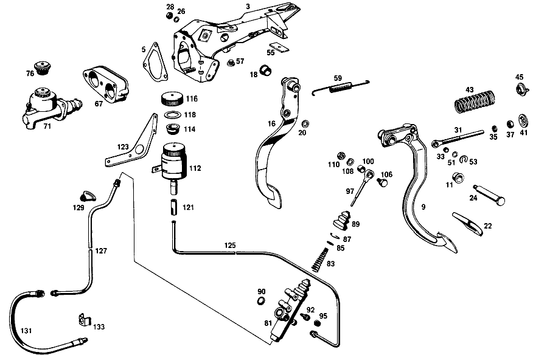

| № | Артикул | Название | Кол. | Примечание | Ограничение |
|---|---|---|---|---|---|
| 3 | A 110 290 09 31 | ПОДШИПНИК | 1 | Коробка передач [001] NOT FOR USE WITH MERCEDES-BENZ HYDRAULIC-AUTOMATIC CLUTCH [005] 010,10/50,12/52 FROM CHASSIS 048977 ALSO INSTALLED ON,SEE FOOTNOTE 7;010,20/60,22/62 FROM CHASSIS 049091 ALSO INSTALLED ON 046334,048382,048491 [007] 044859, 046394, 048273, 048278, 048347, 048349, 048366, 048379, 048460, 048481, 048493, 048510, 048905- 048913, 048915- 048928, 048930- 048933, 048935- 048937, 048940, 048942, 048952- 048954, 048956, 048966, 048968- 048973. [006] 012,10/50,12/52 FROM CHASSIS 108750 ALSO INSTALLED ON,SEE FOOTNOTE 8;012,20/60,22/62 FROM CHASSIS 108278 ALSO INSTALLED ON 100012,107336,107754,108265 [008] 098518, 106735, 106883, 107064, 107168, 107505, 107583, 107635, 107736, 107869, 107893, 108657, 108658, 108672, 108676, 108679, 108680, 108682- 108700, 108706- 108711, 108713- 108748. | |
| 5 | A 108 431 00 80 | ПРОКЛАДКА УПЛОТНИТЕЛЬНАЯ | 1 | Рулевое управление: Влево [001] NOT FOR USE WITH MERCEDES-BENZ HYDRAULIC-AUTOMATIC CLUTCH [009] 010 FROM CHASSIS 055088;012 FROM CHASSIS 121003 | |
| 9 | A 110 290 52 16 | ПЕДАЛЬ | 1 | Коробка передач [001] NOT FOR USE WITH MERCEDES-BENZ HYDRAULIC-AUTOMATIC CLUTCH [005] 010,10/50,12/52 FROM CHASSIS 048977 ALSO INSTALLED ON,SEE FOOTNOTE 7;010,20/60,22/62 FROM CHASSIS 049091 ALSO INSTALLED ON 046334,048382,048491 [007] 044859, 046394, 048273, 048278, 048347, 048349, 048366, 048379, 048460, 048481, 048493, 048510, 048905- 048913, 048915- 048928, 048930- 048933, 048935- 048937, 048940, 048942, 048952- 048954, 048956, 048966, 048968- 048973. [006] 012,10/50,12/52 FROM CHASSIS 108750 ALSO INSTALLED ON,SEE FOOTNOTE 8;012,20/60,22/62 FROM CHASSIS 108278 ALSO INSTALLED ON 100012,107336,107754,108265 [008] 098518, 106735, 106883, 107064, 107168, 107505, 107583, 107635, 107736, 107869, 107893, 108657, 108658, 108672, 108676, 108679, 108680, 108682- 108700, 108706- 108711, 108713- 108748. | |
| 11 | A 110 291 05 50 | - Втулка подшипника | - | Коробка передач | |
| 11 | A 124 292 00 50 | - Втулка подшипника | 2 | Коробка передач [001] NOT FOR USE WITH MERCEDES-BENZ HYDRAULIC-AUTOMATIC CLUTCH | |
| 16 | A 110 290 35 18 | ПЕДАЛЬ | 1 | [001] NOT FOR USE WITH MERCEDES-BENZ HYDRAULIC-AUTOMATIC CLUTCH [005] 010,10/50,12/52 FROM CHASSIS 048977 ALSO INSTALLED ON,SEE FOOTNOTE 7;010,20/60,22/62 FROM CHASSIS 049091 ALSO INSTALLED ON 046334,048382,048491 [007] 044859, 046394, 048273, 048278, 048347, 048349, 048366, 048379, 048460, 048481, 048493, 048510, 048905- 048913, 048915- 048928, 048930- 048933, 048935- 048937, 048940, 048942, 048952- 048954, 048956, 048966, 048968- 048973. [006] 012,10/50,12/52 FROM CHASSIS 108750 ALSO INSTALLED ON,SEE FOOTNOTE 8;012,20/60,22/62 FROM CHASSIS 108278 ALSO INSTALLED ON 100012,107336,107754,108265 [008] 098518, 106735, 106883, 107064, 107168, 107505, 107583, 107635, 107736, 107869, 107893, 108657, 108658, 108672, 108676, 108679, 108680, 108682- 108700, 108706- 108711, 108713- 108748. | |
| 18 | A 110 291 05 50 | - Втулка подшипника | - | ||
| 18 | A 124 292 00 50 | - Втулка подшипника | 2 | [001] NOT FOR USE WITH MERCEDES-BENZ HYDRAULIC-AUTOMATIC CLUTCH | |
| 20 | A 110 292 01 50 | - втулка | 2 | [001] NOT FOR USE WITH MERCEDES-BENZ HYDRAULIC-AUTOMATIC CLUTCH [005] 010,10/50,12/52 FROM CHASSIS 048977 ALSO INSTALLED ON,SEE FOOTNOTE 7;010,20/60,22/62 FROM CHASSIS 049091 ALSO INSTALLED ON 046334,048382,048491 [007] 044859, 046394, 048273, 048278, 048347, 048349, 048366, 048379, 048460, 048481, 048493, 048510, 048905- 048913, 048915- 048928, 048930- 048933, 048935- 048937, 048940, 048942, 048952- 048954, 048956, 048966, 048968- 048973. [006] 012,10/50,12/52 FROM CHASSIS 108750 ALSO INSTALLED ON,SEE FOOTNOTE 8;012,20/60,22/62 FROM CHASSIS 108278 ALSO INSTALLED ON 100012,107336,107754,108265 [008] 098518, 106735, 106883, 107064, 107168, 107505, 107583, 107635, 107736, 107869, 107893, 108657, 108658, 108672, 108676, 108679, 108680, 108682- 108700, 108706- 108711, 108713- 108748. | |
| 22 | A 107 291 01 82 | Чехол | 2 | Коробка передач [001] NOT FOR USE WITH MERCEDES-BENZ HYDRAULIC-AUTOMATIC CLUTCH | |
| 22 | A 107 291 01 82 | Чехол | 1 | Автоматическая коробка переключения передач [001] NOT FOR USE WITH MERCEDES-BENZ HYDRAULIC-AUTOMATIC CLUTCH | |
| 24 | A 110 291 06 74 | БОЛТ | 1 | ПЕДАЛЬ НА КРОНШТЕЙНЕ Коробка передач [001] NOT FOR USE WITH MERCEDES-BENZ HYDRAULIC-AUTOMATIC CLUTCH [005] 010,10/50,12/52 FROM CHASSIS 048977 ALSO INSTALLED ON,SEE FOOTNOTE 7;010,20/60,22/62 FROM CHASSIS 049091 ALSO INSTALLED ON 046334,048382,048491 [007] 044859, 046394, 048273, 048278, 048347, 048349, 048366, 048379, 048460, 048481, 048493, 048510, 048905- 048913, 048915- 048928, 048930- 048933, 048935- 048937, 048940, 048942, 048952- 048954, 048956, 048966, 048968- 048973. [006] 012,10/50,12/52 FROM CHASSIS 108750 ALSO INSTALLED ON,SEE FOOTNOTE 8;012,20/60,22/62 FROM CHASSIS 108278 ALSO INSTALLED ON 100012,107336,107754,108265 [008] 098518, 106735, 106883, 107064, 107168, 107505, 107583, 107635, 107736, 107869, 107893, 108657, 108658, 108672, 108676, 108679, 108680, 108682- 108700, 108706- 108711, 108713- 108748. | |
| 26 | N 000127 010200 | Пружинное кольцо | 1 | ПЕДАЛЬ НА КРОНШТЕЙНЕ [001] NOT FOR USE WITH MERCEDES-BENZ HYDRAULIC-AUTOMATIC CLUTCH [005] 010,10/50,12/52 FROM CHASSIS 048977 ALSO INSTALLED ON,SEE FOOTNOTE 7;010,20/60,22/62 FROM CHASSIS 049091 ALSO INSTALLED ON 046334,048382,048491 [007] 044859, 046394, 048273, 048278, 048347, 048349, 048366, 048379, 048460, 048481, 048493, 048510, 048905- 048913, 048915- 048928, 048930- 048933, 048935- 048937, 048940, 048942, 048952- 048954, 048956, 048966, 048968- 048973. [006] 012,10/50,12/52 FROM CHASSIS 108750 ALSO INSTALLED ON,SEE FOOTNOTE 8;012,20/60,22/62 FROM CHASSIS 108278 ALSO INSTALLED ON 100012,107336,107754,108265 [008] 098518, 106735, 106883, 107064, 107168, 107505, 107583, 107635, 107736, 107869, 107893, 108657, 108658, 108672, 108676, 108679, 108680, 108682- 108700, 108706- 108711, 108713- 108748. | |
| 28 | N 000936 010010 | Гайка | 1 | ПЕДАЛЬ НА КРОНШТЕЙНЕ [001] NOT FOR USE WITH MERCEDES-BENZ HYDRAULIC-AUTOMATIC CLUTCH [005] 010,10/50,12/52 FROM CHASSIS 048977 ALSO INSTALLED ON,SEE FOOTNOTE 7;010,20/60,22/62 FROM CHASSIS 049091 ALSO INSTALLED ON 046334,048382,048491 [007] 044859, 046394, 048273, 048278, 048347, 048349, 048366, 048379, 048460, 048481, 048493, 048510, 048905- 048913, 048915- 048928, 048930- 048933, 048935- 048937, 048940, 048942, 048952- 048954, 048956, 048966, 048968- 048973. [006] 012,10/50,12/52 FROM CHASSIS 108750 ALSO INSTALLED ON,SEE FOOTNOTE 8;012,20/60,22/62 FROM CHASSIS 108278 ALSO INSTALLED ON 100012,107336,107754,108265 [008] 098518, 106735, 106883, 107064, 107168, 107505, 107583, 107635, 107736, 107869, 107893, 108657, 108658, 108672, 108676, 108679, 108680, 108682- 108700, 108706- 108711, 108713- 108748. | |
| 31 | A 110 290 19 39 | Тяга привода | 1 | Коробка передач [001] NOT FOR USE WITH MERCEDES-BENZ HYDRAULIC-AUTOMATIC CLUTCH [005] 010,10/50,12/52 FROM CHASSIS 048977 ALSO INSTALLED ON,SEE FOOTNOTE 7;010,20/60,22/62 FROM CHASSIS 049091 ALSO INSTALLED ON 046334,048382,048491 [007] 044859, 046394, 048273, 048278, 048347, 048349, 048366, 048379, 048460, 048481, 048493, 048510, 048905- 048913, 048915- 048928, 048930- 048933, 048935- 048937, 048940, 048942, 048952- 048954, 048956, 048966, 048968- 048973. [006] 012,10/50,12/52 FROM CHASSIS 108750 ALSO INSTALLED ON,SEE FOOTNOTE 8;012,20/60,22/62 FROM CHASSIS 108278 ALSO INSTALLED ON 100012,107336,107754,108265 [008] 098518, 106735, 106883, 107064, 107168, 107505, 107583, 107635, 107736, 107869, 107893, 108657, 108658, 108672, 108676, 108679, 108680, 108682- 108700, 108706- 108711, 108713- 108748. | |
| 33 | A 110 291 07 50 | - втулка | 1 | Коробка передач [001] NOT FOR USE WITH MERCEDES-BENZ HYDRAULIC-AUTOMATIC CLUTCH [005] 010,10/50,12/52 FROM CHASSIS 048977 ALSO INSTALLED ON,SEE FOOTNOTE 7;010,20/60,22/62 FROM CHASSIS 049091 ALSO INSTALLED ON 046334,048382,048491 [007] 044859, 046394, 048273, 048278, 048347, 048349, 048366, 048379, 048460, 048481, 048493, 048510, 048905- 048913, 048915- 048928, 048930- 048933, 048935- 048937, 048940, 048942, 048952- 048954, 048956, 048966, 048968- 048973. [006] 012,10/50,12/52 FROM CHASSIS 108750 ALSO INSTALLED ON,SEE FOOTNOTE 8;012,20/60,22/62 FROM CHASSIS 108278 ALSO INSTALLED ON 100012,107336,107754,108265 [008] 098518, 106735, 106883, 107064, 107168, 107505, 107583, 107635, 107736, 107869, 107893, 108657, 108658, 108672, 108676, 108679, 108680, 108682- 108700, 108706- 108711, 108713- 108748. | |
| 35 | N 007967 010000 | ГАЙКА | 1 | Коробка передач [001] NOT FOR USE WITH MERCEDES-BENZ HYDRAULIC-AUTOMATIC CLUTCH | |
| 37 | N 070615 010001 | Гайка | 1 | Коробка передач [001] NOT FOR USE WITH MERCEDES-BENZ HYDRAULIC-AUTOMATIC CLUTCH | |
| 41 | A 111 291 04 91 | Тарелка пружины | 1 | Коробка передач [001] NOT FOR USE WITH MERCEDES-BENZ HYDRAULIC-AUTOMATIC CLUTCH | |
| 43 | A 110 993 05 01 | пружина | 1 | Коробка передач [001] NOT FOR USE WITH MERCEDES-BENZ HYDRAULIC-AUTOMATIC CLUTCH | |
| 45 | A 107 291 00 91 | - Тарелка пружины | 1 | Коробка передач [001] NOT FOR USE WITH MERCEDES-BENZ HYDRAULIC-AUTOMATIC CLUTCH | |
| 51 | A 110 990 17 40 | ШАЙБА | 1 | НАЖИМН. ШТАНГА НА ПЕДАЛИ СЦЕПЛ. Коробка передач [001] NOT FOR USE WITH MERCEDES-BENZ HYDRAULIC-AUTOMATIC CLUTCH [005] 010,10/50,12/52 FROM CHASSIS 048977 ALSO INSTALLED ON,SEE FOOTNOTE 7;010,20/60,22/62 FROM CHASSIS 049091 ALSO INSTALLED ON 046334,048382,048491 [007] 044859, 046394, 048273, 048278, 048347, 048349, 048366, 048379, 048460, 048481, 048493, 048510, 048905- 048913, 048915- 048928, 048930- 048933, 048935- 048937, 048940, 048942, 048952- 048954, 048956, 048966, 048968- 048973. [006] 012,10/50,12/52 FROM CHASSIS 108750 ALSO INSTALLED ON,SEE FOOTNOTE 8;012,20/60,22/62 FROM CHASSIS 108278 ALSO INSTALLED ON 100012,107336,107754,108265 [008] 098518, 106735, 106883, 107064, 107168, 107505, 107583, 107635, 107736, 107869, 107893, 108657, 108658, 108672, 108676, 108679, 108680, 108682- 108700, 108706- 108711, 108713- 108748. | |
| 53 | A 000 994 04 10 | ПРЕДОХРАНИТЕЛЬ | 1 | НАЖИМН. ШТАНГА НА ПЕДАЛИ СЦЕПЛ. Коробка передач [001] NOT FOR USE WITH MERCEDES-BENZ HYDRAULIC-AUTOMATIC CLUTCH [005] 010,10/50,12/52 FROM CHASSIS 048977 ALSO INSTALLED ON,SEE FOOTNOTE 7;010,20/60,22/62 FROM CHASSIS 049091 ALSO INSTALLED ON 046334,048382,048491 [007] 044859, 046394, 048273, 048278, 048347, 048349, 048366, 048379, 048460, 048481, 048493, 048510, 048905- 048913, 048915- 048928, 048930- 048933, 048935- 048937, 048940, 048942, 048952- 048954, 048956, 048966, 048968- 048973. [006] 012,10/50,12/52 FROM CHASSIS 108750 ALSO INSTALLED ON,SEE FOOTNOTE 8;012,20/60,22/62 FROM CHASSIS 108278 ALSO INSTALLED ON 100012,107336,107754,108265 [008] 098518, 106735, 106883, 107064, 107168, 107505, 107583, 107635, 107736, 107869, 107893, 108657, 108658, 108672, 108676, 108679, 108680, 108682- 108700, 108706- 108711, 108713- 108748. | |
| 55 | A 111 462 00 75 | ШАЙБА | NB | 2.0 MM Коробка передач [001] NOT FOR USE WITH MERCEDES-BENZ HYDRAULIC-AUTOMATIC CLUTCH [402] БОЛЬШЕ НЕ ПОСТАВЛЯЕТСЯ [011] 010 FROM CHASSIS 008023;012 FROM CHASSIS 016827 | |
| 55 | A 111 462 00 75 | ШАЙБА | NB | 2.0 MM Коробка передач [002] ONLY FOR USE WITH MERCEDES-BENZ HYDRAULIC-AUTOMATIC CLUTCH [402] БОЛЬШЕ НЕ ПОСТАВЛЯЕТСЯ [013] 010 FROM CHASSIS 008476;012 FROM CHASSIS 017885 | |
| 57 | A 111 291 00 86 | Упор | 2 | для CLUTCH PEDAL AND BRAKE PEDAL,RESP. Коробка передач [001] NOT FOR USE WITH MERCEDES-BENZ HYDRAULIC-AUTOMATIC CLUTCH [014] 010 UP TO CHASSIS 036052;012 UP TO CHASSIS 077053 | |
| 57 | A 111 291 00 86 | Упор | 1 | для CLUTCH PEDAL AND BRAKE PEDAL,RESP. Коробка передач [001] NOT FOR USE WITH MERCEDES-BENZ HYDRAULIC-AUTOMATIC CLUTCH [015] 010 FROM CHASSIS 036053;012 FROM CHASSIS 077054 | |
| 59 | A 107 993 04 10 | пружина | 1 | ДЛЯ ПЕДАЛИ ТОРМОЗА | |
| 67 | A 111 295 04 45 | ФЛАНЕЦ | 1 | Коробка передач [001] NOT FOR USE WITH MERCEDES-BENZ HYDRAULIC-AUTOMATIC CLUTCH [003] 010,10/50,12/52 UP TO CHASSIS 048976 EXCEPT FOR,SEE FOOTNOTE 7;010,20/60,22/62 UP TO CHASSIS 049090 EXCEPT FOR 046334,048382,048491 [007] 044859, 046394, 048273, 048278, 048347, 048349, 048366, 048379, 048460, 048481, 048493, 048510, 048905- 048913, 048915- 048928, 048930- 048933, 048935- 048937, 048940, 048942, 048952- 048954, 048956, 048966, 048968- 048973. [004] 012,10/50,12/52 UP TO CHASSIS 108749 EXCEPT FOR,SEE FOOTNOTE 8;012,20/60,22/62 UP TO CHASSIS 108277 EXCEPT FOR 100012,107336,107754,108265 [008] 098518, 106735, 106883, 107064, 107168, 107505, 107583, 107635, 107736, 107869, 107893, 108657, 108658, 108672, 108676, 108679, 108680, 108682- 108700, 108706- 108711, 108713- 108748. [015] 010 FROM CHASSIS 036053;012 FROM CHASSIS 077054 | |
| 71 | A 000 295 14 06 | Главный цилиндр | 1 | Коробка передач [001] NOT FOR USE WITH MERCEDES-BENZ HYDRAULIC-AUTOMATIC CLUTCH [003] 010,10/50,12/52 UP TO CHASSIS 048976 EXCEPT FOR,SEE FOOTNOTE 7;010,20/60,22/62 UP TO CHASSIS 049090 EXCEPT FOR 046334,048382,048491 [007] 044859, 046394, 048273, 048278, 048347, 048349, 048366, 048379, 048460, 048481, 048493, 048510, 048905- 048913, 048915- 048928, 048930- 048933, 048935- 048937, 048940, 048942, 048952- 048954, 048956, 048966, 048968- 048973. [004] 012,10/50,12/52 UP TO CHASSIS 108749 EXCEPT FOR,SEE FOOTNOTE 8;012,20/60,22/62 UP TO CHASSIS 108277 EXCEPT FOR 100012,107336,107754,108265 [008] 098518, 106735, 106883, 107064, 107168, 107505, 107583, 107635, 107736, 107869, 107893, 108657, 108658, 108672, 108676, 108679, 108680, 108682- 108700, 108706- 108711, 108713- 108748. [019] 010 FROM CHASSIS 017776;012 FROM CHASSIS 036124 | |
| 76 | A 000 295 00 37 | - Резьбовая пробка | 1 | Коробка передач [001] NOT FOR USE WITH MERCEDES-BENZ HYDRAULIC-AUTOMATIC CLUTCH | |
| 81 | A 000 295 24 06 | ГЛАВНЫЙ ЦИЛИНДР | 1 | Коробка передач [001] NOT FOR USE WITH MERCEDES-BENZ HYDRAULIC-AUTOMATIC CLUTCH [005] 010,10/50,12/52 FROM CHASSIS 048977 ALSO INSTALLED ON,SEE FOOTNOTE 7;010,20/60,22/62 FROM CHASSIS 049091 ALSO INSTALLED ON 046334,048382,048491 [007] 044859, 046394, 048273, 048278, 048347, 048349, 048366, 048379, 048460, 048481, 048493, 048510, 048905- 048913, 048915- 048928, 048930- 048933, 048935- 048937, 048940, 048942, 048952- 048954, 048956, 048966, 048968- 048973. [006] 012,10/50,12/52 FROM CHASSIS 108750 ALSO INSTALLED ON,SEE FOOTNOTE 8;012,20/60,22/62 FROM CHASSIS 108278 ALSO INSTALLED ON 100012,107336,107754,108265 [008] 098518, 106735, 106883, 107064, 107168, 107505, 107583, 107635, 107736, 107869, 107893, 108657, 108658, 108672, 108676, 108679, 108680, 108682- 108700, 108706- 108711, 108713- 108748. | |
| 83 | A 000 993 21 05 | - пружина | 1 | Коробка передач [001] NOT FOR USE WITH MERCEDES-BENZ HYDRAULIC-AUTOMATIC CLUTCH | |
| 85 | A 000 990 70 40 | - Диск | 1 | 26,9X15 Коробка передач [001] NOT FOR USE WITH MERCEDES-BENZ HYDRAULIC-AUTOMATIC CLUTCH | |
| 87 | A 000 994 33 35 | - Пружинное кольцо | 1 | Коробка передач [001] NOT FOR USE WITH MERCEDES-BENZ HYDRAULIC-AUTOMATIC CLUTCH | |
| 89 | A 000 295 09 83 | - МАНЖЕТА | - | Коробка передач [001] NOT FOR USE WITH MERCEDES-BENZ HYDRAULIC-AUTOMATIC CLUTCH [417] БОЛЬШЕ НЕ ПОСТАВЛЯЕТСЯ, ЗАКАЗЫВАТЬ КОМПЛЕКТ ПОСТАВКИ [024] ПО ОТДЕЛЬНОСТИ БОЛЬШЕ НЕ ПОСТАВЛЯЕТСЯ,ТОЛЬКО В РЕМ.КОМПЛЕКТЕ | |
| 90 | N 000470 020000 | - Шайба | 1 | Коробка передач [001] NOT FOR USE WITH MERCEDES-BENZ HYDRAULIC-AUTOMATIC CLUTCH | |
| 92 | A 000 420 10 55 | - Клапан выпуска воздуха | 1 | Коробка передач [001] NOT FOR USE WITH MERCEDES-BENZ HYDRAULIC-AUTOMATIC CLUTCH | |
| 95 | A 000 421 71 87 | - КОЛПАЧОК | - | Коробка передач | |
| 95 | A 000 421 08 87 | - Защитный колпачок | 1 | Коробка передач [001] NOT FOR USE WITH MERCEDES-BENZ HYDRAULIC-AUTOMATIC CLUTCH | |
| 97 | A 110 290 18 39 | Тяга привода | 1 | ГЛАВНЫЙ ЦИЛИНДР Коробка передач [001] NOT FOR USE WITH MERCEDES-BENZ HYDRAULIC-AUTOMATIC CLUTCH [005] 010,10/50,12/52 FROM CHASSIS 048977 ALSO INSTALLED ON,SEE FOOTNOTE 7;010,20/60,22/62 FROM CHASSIS 049091 ALSO INSTALLED ON 046334,048382,048491 [007] 044859, 046394, 048273, 048278, 048347, 048349, 048366, 048379, 048460, 048481, 048493, 048510, 048905- 048913, 048915- 048928, 048930- 048933, 048935- 048937, 048940, 048942, 048952- 048954, 048956, 048966, 048968- 048973. [006] 012,10/50,12/52 FROM CHASSIS 108750 ALSO INSTALLED ON,SEE FOOTNOTE 8;012,20/60,22/62 FROM CHASSIS 108278 ALSO INSTALLED ON 100012,107336,107754,108265 [008] 098518, 106735, 106883, 107064, 107168, 107505, 107583, 107635, 107736, 107869, 107893, 108657, 108658, 108672, 108676, 108679, 108680, 108682- 108700, 108706- 108711, 108713- 108748. | |
| 100 | A 110 295 02 50 | - Втулка подшипника | 1 | Коробка передач [001] NOT FOR USE WITH MERCEDES-BENZ HYDRAULIC-AUTOMATIC CLUTCH [005] 010,10/50,12/52 FROM CHASSIS 048977 ALSO INSTALLED ON,SEE FOOTNOTE 7;010,20/60,22/62 FROM CHASSIS 049091 ALSO INSTALLED ON 046334,048382,048491 [007] 044859, 046394, 048273, 048278, 048347, 048349, 048366, 048379, 048460, 048481, 048493, 048510, 048905- 048913, 048915- 048928, 048930- 048933, 048935- 048937, 048940, 048942, 048952- 048954, 048956, 048966, 048968- 048973. [006] 012,10/50,12/52 FROM CHASSIS 108750 ALSO INSTALLED ON,SEE FOOTNOTE 8;012,20/60,22/62 FROM CHASSIS 108278 ALSO INSTALLED ON 100012,107336,107754,108265 [008] 098518, 106735, 106883, 107064, 107168, 107505, 107583, 107635, 107736, 107869, 107893, 108657, 108658, 108672, 108676, 108679, 108680, 108682- 108700, 108706- 108711, 108713- 108748. | |
| 106 | A 094 295 01 00 | болт | - | Коробка передач | |
| 106 | A 115 295 01 72 | Эксцентриковая гайка | 2 | BRAKE MASTER CYLINDER TO BRAKE PEDAL OR CLUTCH MASTER CYLINDER TO CLUTCH PEDAL,RESPECTIVELY Коробка передач [001] NOT FOR USE WITH MERCEDES-BENZ HYDRAULIC-AUTOMATIC CLUTCH [005] 010,10/50,12/52 FROM CHASSIS 048977 ALSO INSTALLED ON,SEE FOOTNOTE 7;010,20/60,22/62 FROM CHASSIS 049091 ALSO INSTALLED ON 046334,048382,048491 [007] 044859, 046394, 048273, 048278, 048347, 048349, 048366, 048379, 048460, 048481, 048493, 048510, 048905- 048913, 048915- 048928, 048930- 048933, 048935- 048937, 048940, 048942, 048952- 048954, 048956, 048966, 048968- 048973. [006] 012,10/50,12/52 FROM CHASSIS 108750 ALSO INSTALLED ON,SEE FOOTNOTE 8;012,20/60,22/62 FROM CHASSIS 108278 ALSO INSTALLED ON 100012,107336,107754,108265 [008] 098518, 106735, 106883, 107064, 107168, 107505, 107583, 107635, 107736, 107869, 107893, 108657, 108658, 108672, 108676, 108679, 108680, 108682- 108700, 108706- 108711, 108713- 108748. | |
| 106 | A 115 295 01 72 | Эксцентриковая гайка | 1 | BRAKE MASTER CYLINDER TO BRAKE PEDAL OR CLUTCH MASTER CYLINDER TO CLUTCH PEDAL,RESPECTIVELY Автоматическая коробка переключения передач [001] NOT FOR USE WITH MERCEDES-BENZ HYDRAULIC-AUTOMATIC CLUTCH [005] 010,10/50,12/52 FROM CHASSIS 048977 ALSO INSTALLED ON,SEE FOOTNOTE 7;010,20/60,22/62 FROM CHASSIS 049091 ALSO INSTALLED ON 046334,048382,048491 [007] 044859, 046394, 048273, 048278, 048347, 048349, 048366, 048379, 048460, 048481, 048493, 048510, 048905- 048913, 048915- 048928, 048930- 048933, 048935- 048937, 048940, 048942, 048952- 048954, 048956, 048966, 048968- 048973. [006] 012,10/50,12/52 FROM CHASSIS 108750 ALSO INSTALLED ON,SEE FOOTNOTE 8;012,20/60,22/62 FROM CHASSIS 108278 ALSO INSTALLED ON 100012,107336,107754,108265 [008] 098518, 106735, 106883, 107064, 107168, 107505, 107583, 107635, 107736, 107869, 107893, 108657, 108658, 108672, 108676, 108679, 108680, 108682- 108700, 108706- 108711, 108713- 108748. | |
| 108 | N 000127 008200 | КОЛЬЦО ПРУЖИННОЕ | 2 | BRAKE MASTER CYLINDER TO BRAKE PEDAL OR CLUTCH MASTER CYLINDER TO CLUTCH PEDAL,RESPECTIVELY Коробка передач [001] NOT FOR USE WITH MERCEDES-BENZ HYDRAULIC-AUTOMATIC CLUTCH [005] 010,10/50,12/52 FROM CHASSIS 048977 ALSO INSTALLED ON,SEE FOOTNOTE 7;010,20/60,22/62 FROM CHASSIS 049091 ALSO INSTALLED ON 046334,048382,048491 [007] 044859, 046394, 048273, 048278, 048347, 048349, 048366, 048379, 048460, 048481, 048493, 048510, 048905- 048913, 048915- 048928, 048930- 048933, 048935- 048937, 048940, 048942, 048952- 048954, 048956, 048966, 048968- 048973. [006] 012,10/50,12/52 FROM CHASSIS 108750 ALSO INSTALLED ON,SEE FOOTNOTE 8;012,20/60,22/62 FROM CHASSIS 108278 ALSO INSTALLED ON 100012,107336,107754,108265 [008] 098518, 106735, 106883, 107064, 107168, 107505, 107583, 107635, 107736, 107869, 107893, 108657, 108658, 108672, 108676, 108679, 108680, 108682- 108700, 108706- 108711, 108713- 108748. | |
| 108 | N 000127 008200 | КОЛЬЦО ПРУЖИННОЕ | 1 | BRAKE MASTER CYLINDER TO BRAKE PEDAL OR CLUTCH MASTER CYLINDER TO CLUTCH PEDAL,RESPECTIVELY Автоматическая коробка переключения передач [001] NOT FOR USE WITH MERCEDES-BENZ HYDRAULIC-AUTOMATIC CLUTCH [005] 010,10/50,12/52 FROM CHASSIS 048977 ALSO INSTALLED ON,SEE FOOTNOTE 7;010,20/60,22/62 FROM CHASSIS 049091 ALSO INSTALLED ON 046334,048382,048491 [007] 044859, 046394, 048273, 048278, 048347, 048349, 048366, 048379, 048460, 048481, 048493, 048510, 048905- 048913, 048915- 048928, 048930- 048933, 048935- 048937, 048940, 048942, 048952- 048954, 048956, 048966, 048968- 048973. [006] 012,10/50,12/52 FROM CHASSIS 108750 ALSO INSTALLED ON,SEE FOOTNOTE 8;012,20/60,22/62 FROM CHASSIS 108278 ALSO INSTALLED ON 100012,107336,107754,108265 [008] 098518, 106735, 106883, 107064, 107168, 107505, 107583, 107635, 107736, 107869, 107893, 108657, 108658, 108672, 108676, 108679, 108680, 108682- 108700, 108706- 108711, 108713- 108748. | |
| 110 | N 000936 008003 | ГАЙКА | 2 | BRAKE MASTER CYLINDER TO BRAKE PEDAL OR CLUTCH MASTER CYLINDER TO CLUTCH PEDAL,RESPECTIVELY Коробка передач [001] NOT FOR USE WITH MERCEDES-BENZ HYDRAULIC-AUTOMATIC CLUTCH [005] 010,10/50,12/52 FROM CHASSIS 048977 ALSO INSTALLED ON,SEE FOOTNOTE 7;010,20/60,22/62 FROM CHASSIS 049091 ALSO INSTALLED ON 046334,048382,048491 [007] 044859, 046394, 048273, 048278, 048347, 048349, 048366, 048379, 048460, 048481, 048493, 048510, 048905- 048913, 048915- 048928, 048930- 048933, 048935- 048937, 048940, 048942, 048952- 048954, 048956, 048966, 048968- 048973. [006] 012,10/50,12/52 FROM CHASSIS 108750 ALSO INSTALLED ON,SEE FOOTNOTE 8;012,20/60,22/62 FROM CHASSIS 108278 ALSO INSTALLED ON 100012,107336,107754,108265 [008] 098518, 106735, 106883, 107064, 107168, 107505, 107583, 107635, 107736, 107869, 107893, 108657, 108658, 108672, 108676, 108679, 108680, 108682- 108700, 108706- 108711, 108713- 108748. | |
| 110 | N 000936 008003 | ГАЙКА | 1 | BRAKE MASTER CYLINDER TO BRAKE PEDAL OR CLUTCH MASTER CYLINDER TO CLUTCH PEDAL,RESPECTIVELY Автоматическая коробка переключения передач [001] NOT FOR USE WITH MERCEDES-BENZ HYDRAULIC-AUTOMATIC CLUTCH [005] 010,10/50,12/52 FROM CHASSIS 048977 ALSO INSTALLED ON,SEE FOOTNOTE 7;010,20/60,22/62 FROM CHASSIS 049091 ALSO INSTALLED ON 046334,048382,048491 [007] 044859, 046394, 048273, 048278, 048347, 048349, 048366, 048379, 048460, 048481, 048493, 048510, 048905- 048913, 048915- 048928, 048930- 048933, 048935- 048937, 048940, 048942, 048952- 048954, 048956, 048966, 048968- 048973. [006] 012,10/50,12/52 FROM CHASSIS 108750 ALSO INSTALLED ON,SEE FOOTNOTE 8;012,20/60,22/62 FROM CHASSIS 108278 ALSO INSTALLED ON 100012,107336,107754,108265 [008] 098518, 106735, 106883, 107064, 107168, 107505, 107583, 107635, 107736, 107869, 107893, 108657, 108658, 108672, 108676, 108679, 108680, 108682- 108700, 108706- 108711, 108713- 108748. | |
| 112 | A 111 290 02 15 | Расширительный бачок | 1 | Коробка передач [001] NOT FOR USE WITH MERCEDES-BENZ HYDRAULIC-AUTOMATIC CLUTCH [005] 010,10/50,12/52 FROM CHASSIS 048977 ALSO INSTALLED ON,SEE FOOTNOTE 7;010,20/60,22/62 FROM CHASSIS 049091 ALSO INSTALLED ON 046334,048382,048491 [007] 044859, 046394, 048273, 048278, 048347, 048349, 048366, 048379, 048460, 048481, 048493, 048510, 048905- 048913, 048915- 048928, 048930- 048933, 048935- 048937, 048940, 048942, 048952- 048954, 048956, 048966, 048968- 048973. [006] 012,10/50,12/52 FROM CHASSIS 108750 ALSO INSTALLED ON,SEE FOOTNOTE 8;012,20/60,22/62 FROM CHASSIS 108278 ALSO INSTALLED ON 100012,107336,107754,108265 [008] 098518, 106735, 106883, 107064, 107168, 107505, 107583, 107635, 107736, 107869, 107893, 108657, 108658, 108672, 108676, 108679, 108680, 108682- 108700, 108706- 108711, 108713- 108748. | |
| 114 | A 000 431 43 34 | - Сетка | 1 | Коробка передач [001] NOT FOR USE WITH MERCEDES-BENZ HYDRAULIC-AUTOMATIC CLUTCH | |
| 116 | A 000 295 02 37 | - ЗАГЛУШКА РЕЗЬБОВАЯ | - | Коробка передач | |
| 116 | A 000 431 54 33 | - Запорная крышка | 1 | Коробка передач [001] NOT FOR USE WITH MERCEDES-BENZ HYDRAULIC-AUTOMATIC CLUTCH | |
| 118 | A 000 997 68 41 | - УПЛОТНИТ. КОЛЬЦО | 1 | Коробка передач [001] NOT FOR USE WITH MERCEDES-BENZ HYDRAULIC-AUTOMATIC CLUTCH | |
| 121 | A 000 295 10 83 | - МАНЖЕТА | 1 | Коробка передач [001] NOT FOR USE WITH MERCEDES-BENZ HYDRAULIC-AUTOMATIC CLUTCH | |
| 123 | A 110 295 03 40 | ДЕРЖАТЕЛЬ | 1 | Рулевое управление: ВправоКоробка передач [001] NOT FOR USE WITH MERCEDES-BENZ HYDRAULIC-AUTOMATIC CLUTCH [005] 010,10/50,12/52 FROM CHASSIS 048977 ALSO INSTALLED ON,SEE FOOTNOTE 7;010,20/60,22/62 FROM CHASSIS 049091 ALSO INSTALLED ON 046334,048382,048491 [007] 044859, 046394, 048273, 048278, 048347, 048349, 048366, 048379, 048460, 048481, 048493, 048510, 048905- 048913, 048915- 048928, 048930- 048933, 048935- 048937, 048940, 048942, 048952- 048954, 048956, 048966, 048968- 048973. [006] 012,10/50,12/52 FROM CHASSIS 108750 ALSO INSTALLED ON,SEE FOOTNOTE 8;012,20/60,22/62 FROM CHASSIS 108278 ALSO INSTALLED ON 100012,107336,107754,108265 [008] 098518, 106735, 106883, 107064, 107168, 107505, 107583, 107635, 107736, 107869, 107893, 108657, 108658, 108672, 108676, 108679, 108680, 108682- 108700, 108706- 108711, 108713- 108748. [020] 010 UP TO CHASSIS 065672;012 UP TO CHASSIS 148879 EXCEPT FOR 148827,148837,148844,148850,148852 | |
| 125 | A 110 290 05 13 | ПРОВОД | 1 | РАСШИРИТ. БАЧОК К ЦИЛ. ДАТЧИКУ Рулевое управление: ВлевоКоробка передач [001] NOT FOR USE WITH MERCEDES-BENZ HYDRAULIC-AUTOMATIC CLUTCH [005] 010,10/50,12/52 FROM CHASSIS 048977 ALSO INSTALLED ON,SEE FOOTNOTE 7;010,20/60,22/62 FROM CHASSIS 049091 ALSO INSTALLED ON 046334,048382,048491 [007] 044859, 046394, 048273, 048278, 048347, 048349, 048366, 048379, 048460, 048481, 048493, 048510, 048905- 048913, 048915- 048928, 048930- 048933, 048935- 048937, 048940, 048942, 048952- 048954, 048956, 048966, 048968- 048973. [006] 012,10/50,12/52 FROM CHASSIS 108750 ALSO INSTALLED ON,SEE FOOTNOTE 8;012,20/60,22/62 FROM CHASSIS 108278 ALSO INSTALLED ON 100012,107336,107754,108265 [008] 098518, 106735, 106883, 107064, 107168, 107505, 107583, 107635, 107736, 107869, 107893, 108657, 108658, 108672, 108676, 108679, 108680, 108682- 108700, 108706- 108711, 108713- 108748. | |
| 127 | A 110 290 00 13 | ПРОВОД | - | Рулевое управление: ВлевоКоробка передач | |
| 127 | A 100 320 21 53 | ПРОВОД | 1 | FROM CLUTCH MASTER CYLINDER TO CONNECTING HOSE Рулевое управление: ВлевоКоробка передач [001] NOT FOR USE WITH MERCEDES-BENZ HYDRAULIC-AUTOMATIC CLUTCH [005] 010,10/50,12/52 FROM CHASSIS 048977 ALSO INSTALLED ON,SEE FOOTNOTE 7;010,20/60,22/62 FROM CHASSIS 049091 ALSO INSTALLED ON 046334,048382,048491 [007] 044859, 046394, 048273, 048278, 048347, 048349, 048366, 048379, 048460, 048481, 048493, 048510, 048905- 048913, 048915- 048928, 048930- 048933, 048935- 048937, 048940, 048942, 048952- 048954, 048956, 048966, 048968- 048973. [006] 012,10/50,12/52 FROM CHASSIS 108750 ALSO INSTALLED ON,SEE FOOTNOTE 8;012,20/60,22/62 FROM CHASSIS 108278 ALSO INSTALLED ON 100012,107336,107754,108265 [008] 098518, 106735, 106883, 107064, 107168, 107505, 107583, 107635, 107736, 107869, 107893, 108657, 108658, 108672, 108676, 108679, 108680, 108682- 108700, 108706- 108711, 108713- 108748. [402] БОЛЬШЕ НЕ ПОСТАВЛЯЕТСЯ [409] ПРИ МОНТАЖЕ ПОДОГНАТЬ ПО МЕСТУ | |
| 129 | A 007 997 58 81 | втулка | 1 | Коробка передач [001] NOT FOR USE WITH MERCEDES-BENZ HYDRAULIC-AUTOMATIC CLUTCH [005] 010,10/50,12/52 FROM CHASSIS 048977 ALSO INSTALLED ON,SEE FOOTNOTE 7;010,20/60,22/62 FROM CHASSIS 049091 ALSO INSTALLED ON 046334,048382,048491 [007] 044859, 046394, 048273, 048278, 048347, 048349, 048366, 048379, 048460, 048481, 048493, 048510, 048905- 048913, 048915- 048928, 048930- 048933, 048935- 048937, 048940, 048942, 048952- 048954, 048956, 048966, 048968- 048973. [006] 012,10/50,12/52 FROM CHASSIS 108750 ALSO INSTALLED ON,SEE FOOTNOTE 8;012,20/60,22/62 FROM CHASSIS 108278 ALSO INSTALLED ON 100012,107336,107754,108265 [008] 098518, 106735, 106883, 107064, 107168, 107505, 107583, 107635, 107736, 107869, 107893, 108657, 108658, 108672, 108676, 108679, 108680, 108682- 108700, 108706- 108711, 108713- 108748. | |
| 131 | A 000 295 01 35 | ШЛАНГ | 1 | FROM PIPE LINE TO CLUTCH SLAVE CYLINDER Коробка передач [001] NOT FOR USE WITH MERCEDES-BENZ HYDRAULIC-AUTOMATIC CLUTCH [005] 010,10/50,12/52 FROM CHASSIS 048977 ALSO INSTALLED ON,SEE FOOTNOTE 7;010,20/60,22/62 FROM CHASSIS 049091 ALSO INSTALLED ON 046334,048382,048491 [007] 044859, 046394, 048273, 048278, 048347, 048349, 048366, 048379, 048460, 048481, 048493, 048510, 048905- 048913, 048915- 048928, 048930- 048933, 048935- 048937, 048940, 048942, 048952- 048954, 048956, 048966, 048968- 048973. [006] 012,10/50,12/52 FROM CHASSIS 108750 ALSO INSTALLED ON,SEE FOOTNOTE 8;012,20/60,22/62 FROM CHASSIS 108278 ALSO INSTALLED ON 100012,107336,107754,108265 [008] 098518, 106735, 106883, 107064, 107168, 107505, 107583, 107635, 107736, 107869, 107893, 108657, 108658, 108672, 108676, 108679, 108680, 108682- 108700, 108706- 108711, 108713- 108748. | |
| 133 | A 000 295 01 73 | Удерживающая пружина | 1 | для CONNECTING HOSE Коробка передач [001] NOT FOR USE WITH MERCEDES-BENZ HYDRAULIC-AUTOMATIC CLUTCH [005] 010,10/50,12/52 FROM CHASSIS 048977 ALSO INSTALLED ON,SEE FOOTNOTE 7;010,20/60,22/62 FROM CHASSIS 049091 ALSO INSTALLED ON 046334,048382,048491 [007] 044859, 046394, 048273, 048278, 048347, 048349, 048366, 048379, 048460, 048481, 048493, 048510, 048905- 048913, 048915- 048928, 048930- 048933, 048935- 048937, 048940, 048942, 048952- 048954, 048956, 048966, 048968- 048973. [006] 012,10/50,12/52 FROM CHASSIS 108750 ALSO INSTALLED ON,SEE FOOTNOTE 8;012,20/60,22/62 FROM CHASSIS 108278 ALSO INSTALLED ON 100012,107336,107754,108265 [008] 098518, 106735, 106883, 107064, 107168, 107505, 107583, 107635, 107736, 107869, 107893, 108657, 108658, 108672, 108676, 108679, 108680, 108682- 108700, 108706- 108711, 108713- 108748. | |
| A 110 290 02 31 | ПОДШИПНИК | 1 | [001] NOT FOR USE WITH MERCEDES-BENZ HYDRAULIC-AUTOMATIC CLUTCH [003] 010,10/50,12/52 UP TO CHASSIS 048976 EXCEPT FOR,SEE FOOTNOTE 7;010,20/60,22/62 UP TO CHASSIS 049090 EXCEPT FOR 046334,048382,048491 [007] 044859, 046394, 048273, 048278, 048347, 048349, 048366, 048379, 048460, 048481, 048493, 048510, 048905- 048913, 048915- 048928, 048930- 048933, 048935- 048937, 048940, 048942, 048952- 048954, 048956, 048966, 048968- 048973. [004] 012,10/50,12/52 UP TO CHASSIS 108749 EXCEPT FOR,SEE FOOTNOTE 8;012,20/60,22/62 UP TO CHASSIS 108277 EXCEPT FOR 100012,107336,107754,108265 [008] 098518, 106735, 106883, 107064, 107168, 107505, 107583, 107635, 107736, 107869, 107893, 108657, 108658, 108672, 108676, 108679, 108680, 108682- 108700, 108706- 108711, 108713- 108748. | ||
| A 110 290 02 31 | ПОДШИПНИК | 1 | Коробка передач [002] ONLY FOR USE WITH MERCEDES-BENZ HYDRAULIC-AUTOMATIC CLUTCH | ||
| A 109 290 00 31 | ПОДШИПНИК | 1 | Автоматическая коробка переключения передач [001] NOT FOR USE WITH MERCEDES-BENZ HYDRAULIC-AUTOMATIC CLUTCH [005] 010,10/50,12/52 FROM CHASSIS 048977 ALSO INSTALLED ON,SEE FOOTNOTE 7;010,20/60,22/62 FROM CHASSIS 049091 ALSO INSTALLED ON 046334,048382,048491 [007] 044859, 046394, 048273, 048278, 048347, 048349, 048366, 048379, 048460, 048481, 048493, 048510, 048905- 048913, 048915- 048928, 048930- 048933, 048935- 048937, 048940, 048942, 048952- 048954, 048956, 048966, 048968- 048973. [006] 012,10/50,12/52 FROM CHASSIS 108750 ALSO INSTALLED ON,SEE FOOTNOTE 8;012,20/60,22/62 FROM CHASSIS 108278 ALSO INSTALLED ON 100012,107336,107754,108265 [008] 098518, 106735, 106883, 107064, 107168, 107505, 107583, 107635, 107736, 107869, 107893, 108657, 108658, 108672, 108676, 108679, 108680, 108682- 108700, 108706- 108711, 108713- 108748. [402] БОЛЬШЕ НЕ ПОСТАВЛЯЕТСЯ | ||
| A 110 431 03 80 | ПРОКЛАДКА УПЛОТНИТЕЛЬНАЯ | 1 | Рулевое управление: Вправо [001] NOT FOR USE WITH MERCEDES-BENZ HYDRAULIC-AUTOMATIC CLUTCH [009] 010 FROM CHASSIS 055088;012 FROM CHASSIS 121003 | ||
| A 110 290 24 16 | ПЕДАЛЬ | 1 | Коробка передач [001] NOT FOR USE WITH MERCEDES-BENZ HYDRAULIC-AUTOMATIC CLUTCH [003] 010,10/50,12/52 UP TO CHASSIS 048976 EXCEPT FOR,SEE FOOTNOTE 7;010,20/60,22/62 UP TO CHASSIS 049090 EXCEPT FOR 046334,048382,048491 [007] 044859, 046394, 048273, 048278, 048347, 048349, 048366, 048379, 048460, 048481, 048493, 048510, 048905- 048913, 048915- 048928, 048930- 048933, 048935- 048937, 048940, 048942, 048952- 048954, 048956, 048966, 048968- 048973. [004] 012,10/50,12/52 UP TO CHASSIS 108749 EXCEPT FOR,SEE FOOTNOTE 8;012,20/60,22/62 UP TO CHASSIS 108277 EXCEPT FOR 100012,107336,107754,108265 [008] 098518, 106735, 106883, 107064, 107168, 107505, 107583, 107635, 107736, 107869, 107893, 108657, 108658, 108672, 108676, 108679, 108680, 108682- 108700, 108706- 108711, 108713- 108748. | ||
| A 111 292 02 82 | - ЧЕХОЛ | 1 | Коробка передач [001] NOT FOR USE WITH MERCEDES-BENZ HYDRAULIC-AUTOMATIC CLUTCH [010] 010 UP TO CHASSIS 008022;012 UP TO CHASSIS 016826 | ||
| A 107 291 01 82 | - Чехол | 1 | Коробка передач [001] NOT FOR USE WITH MERCEDES-BENZ HYDRAULIC-AUTOMATIC CLUTCH [011] 010 FROM CHASSIS 008023;012 FROM CHASSIS 016827 | ||
| A 110 291 05 50 | - Втулка подшипника | - | Коробка передач | ||
| A 124 292 00 50 | - Втулка подшипника | 2 | Коробка передач [001] NOT FOR USE WITH MERCEDES-BENZ HYDRAULIC-AUTOMATIC CLUTCH | ||
| A 110 290 27 18 | ПЕДАЛЬ | 1 | [001] NOT FOR USE WITH MERCEDES-BENZ HYDRAULIC-AUTOMATIC CLUTCH [003] 010,10/50,12/52 UP TO CHASSIS 048976 EXCEPT FOR,SEE FOOTNOTE 7;010,20/60,22/62 UP TO CHASSIS 049090 EXCEPT FOR 046334,048382,048491 [007] 044859, 046394, 048273, 048278, 048347, 048349, 048366, 048379, 048460, 048481, 048493, 048510, 048905- 048913, 048915- 048928, 048930- 048933, 048935- 048937, 048940, 048942, 048952- 048954, 048956, 048966, 048968- 048973. [004] 012,10/50,12/52 UP TO CHASSIS 108749 EXCEPT FOR,SEE FOOTNOTE 8;012,20/60,22/62 UP TO CHASSIS 108277 EXCEPT FOR 100012,107336,107754,108265 [008] 098518, 106735, 106883, 107064, 107168, 107505, 107583, 107635, 107736, 107869, 107893, 108657, 108658, 108672, 108676, 108679, 108680, 108682- 108700, 108706- 108711, 108713- 108748. [402] БОЛЬШЕ НЕ ПОСТАВЛЯЕТСЯ | ||
| A 110 290 27 18 | ПЕДАЛЬ | 1 | Коробка передач [002] ONLY FOR USE WITH MERCEDES-BENZ HYDRAULIC-AUTOMATIC CLUTCH [402] БОЛЬШЕ НЕ ПОСТАВЛЯЕТСЯ | ||
| A 111 292 02 82 | - ЧЕХОЛ | 1 | для BRAKE PEDAL Коробка передач [001] NOT FOR USE WITH MERCEDES-BENZ HYDRAULIC-AUTOMATIC CLUTCH [010] 010 UP TO CHASSIS 008022;012 UP TO CHASSIS 016826 | ||
| A 111 292 02 82 | - ЧЕХОЛ | 1 | для BRAKE PEDAL Коробка передач [002] ONLY FOR USE WITH MERCEDES-BENZ HYDRAULIC-AUTOMATIC CLUTCH [012] 010 UP TO CHASSIS 008475;012 UP TO CHASSIS 017884 | ||
| A 107 291 01 82 | - Чехол | 1 | для BRAKE PEDAL Коробка передач [001] NOT FOR USE WITH MERCEDES-BENZ HYDRAULIC-AUTOMATIC CLUTCH [011] 010 FROM CHASSIS 008023;012 FROM CHASSIS 016827 | ||
| A 107 291 01 82 | Чехол | 1 | для BRAKE PEDAL Коробка передач [002] ONLY FOR USE WITH MERCEDES-BENZ HYDRAULIC-AUTOMATIC CLUTCH [013] 010 FROM CHASSIS 008476;012 FROM CHASSIS 017885 | ||
| A 107 291 01 82 | Чехол | 1 | для BRAKE PEDAL Автоматическая коробка переключения передач [001] NOT FOR USE WITH MERCEDES-BENZ HYDRAULIC-AUTOMATIC CLUTCH | ||
| A 110 291 05 50 | - Втулка подшипника | - | |||
| A 124 292 00 50 | - Втулка подшипника | 2 | |||
| A 111 291 02 50 | ВТУЛКА | 1 | ДЛЯ ПЕДАЛИ СЦЕПЛЕНИЯ Коробка передач [001] NOT FOR USE WITH MERCEDES-BENZ HYDRAULIC-AUTOMATIC CLUTCH [003] 010,10/50,12/52 UP TO CHASSIS 048976 EXCEPT FOR,SEE FOOTNOTE 7;010,20/60,22/62 UP TO CHASSIS 049090 EXCEPT FOR 046334,048382,048491 [007] 044859, 046394, 048273, 048278, 048347, 048349, 048366, 048379, 048460, 048481, 048493, 048510, 048905- 048913, 048915- 048928, 048930- 048933, 048935- 048937, 048940, 048942, 048952- 048954, 048956, 048966, 048968- 048973. [004] 012,10/50,12/52 UP TO CHASSIS 108749 EXCEPT FOR,SEE FOOTNOTE 8;012,20/60,22/62 UP TO CHASSIS 108277 EXCEPT FOR 100012,107336,107754,108265 [008] 098518, 106735, 106883, 107064, 107168, 107505, 107583, 107635, 107736, 107869, 107893, 108657, 108658, 108672, 108676, 108679, 108680, 108682- 108700, 108706- 108711, 108713- 108748. | ||
| A 111 292 01 50 | ВТУЛКА | 1 | ДЛЯ ПЕДАЛИ ТОРМОЗА [001] NOT FOR USE WITH MERCEDES-BENZ HYDRAULIC-AUTOMATIC CLUTCH [003] 010,10/50,12/52 UP TO CHASSIS 048976 EXCEPT FOR,SEE FOOTNOTE 7;010,20/60,22/62 UP TO CHASSIS 049090 EXCEPT FOR 046334,048382,048491 [007] 044859, 046394, 048273, 048278, 048347, 048349, 048366, 048379, 048460, 048481, 048493, 048510, 048905- 048913, 048915- 048928, 048930- 048933, 048935- 048937, 048940, 048942, 048952- 048954, 048956, 048966, 048968- 048973. [004] 012,10/50,12/52 UP TO CHASSIS 108749 EXCEPT FOR,SEE FOOTNOTE 8;012,20/60,22/62 UP TO CHASSIS 108277 EXCEPT FOR 100012,107336,107754,108265 [008] 098518, 106735, 106883, 107064, 107168, 107505, 107583, 107635, 107736, 107869, 107893, 108657, 108658, 108672, 108676, 108679, 108680, 108682- 108700, 108706- 108711, 108713- 108748. [402] БОЛЬШЕ НЕ ПОСТАВЛЯЕТСЯ | ||
| A 111 292 01 50 | ВТУЛКА | 1 | Коробка передач [002] ONLY FOR USE WITH MERCEDES-BENZ HYDRAULIC-AUTOMATIC CLUTCH [402] БОЛЬШЕ НЕ ПОСТАВЛЯЕТСЯ | ||
| N 000931 012081 | Винт | 1 | ПЕДАЛЬ НА КРОНШТЕЙНЕ Коробка передач [001] NOT FOR USE WITH MERCEDES-BENZ HYDRAULIC-AUTOMATIC CLUTCH [003] 010,10/50,12/52 UP TO CHASSIS 048976 EXCEPT FOR,SEE FOOTNOTE 7;010,20/60,22/62 UP TO CHASSIS 049090 EXCEPT FOR 046334,048382,048491 [007] 044859, 046394, 048273, 048278, 048347, 048349, 048366, 048379, 048460, 048481, 048493, 048510, 048905- 048913, 048915- 048928, 048930- 048933, 048935- 048937, 048940, 048942, 048952- 048954, 048956, 048966, 048968- 048973. [004] 012,10/50,12/52 UP TO CHASSIS 108749 EXCEPT FOR,SEE FOOTNOTE 8;012,20/60,22/62 UP TO CHASSIS 108277 EXCEPT FOR 100012,107336,107754,108265 [008] 098518, 106735, 106883, 107064, 107168, 107505, 107583, 107635, 107736, 107869, 107893, 108657, 108658, 108672, 108676, 108679, 108680, 108682- 108700, 108706- 108711, 108713- 108748. | ||
| N 000931 012052 | Винт | 1 | ПЕДАЛЬ НА КРОНШТЕЙНЕ Автоматическая коробка переключения передач [003] 010,10/50,12/52 UP TO CHASSIS 048976 EXCEPT FOR,SEE FOOTNOTE 7;010,20/60,22/62 UP TO CHASSIS 049090 EXCEPT FOR 046334,048382,048491 [007] 044859, 046394, 048273, 048278, 048347, 048349, 048366, 048379, 048460, 048481, 048493, 048510, 048905- 048913, 048915- 048928, 048930- 048933, 048935- 048937, 048940, 048942, 048952- 048954, 048956, 048966, 048968- 048973. [004] 012,10/50,12/52 UP TO CHASSIS 108749 EXCEPT FOR,SEE FOOTNOTE 8;012,20/60,22/62 UP TO CHASSIS 108277 EXCEPT FOR 100012,107336,107754,108265 [008] 098518, 106735, 106883, 107064, 107168, 107505, 107583, 107635, 107736, 107869, 107893, 108657, 108658, 108672, 108676, 108679, 108680, 108682- 108700, 108706- 108711, 108713- 108748. [402] БОЛЬШЕ НЕ ПОСТАВЛЯЕТСЯ | ||
| N 000125 013000 | ШАЙБА | - | Коробка передач | ||
| N 000125 013008 | Шайба | 1 | ПЕДАЛЬ НА КРОНШТЕЙНЕ Коробка передач [001] NOT FOR USE WITH MERCEDES-BENZ HYDRAULIC-AUTOMATIC CLUTCH [003] 010,10/50,12/52 UP TO CHASSIS 048976 EXCEPT FOR,SEE FOOTNOTE 7;010,20/60,22/62 UP TO CHASSIS 049090 EXCEPT FOR 046334,048382,048491 [007] 044859, 046394, 048273, 048278, 048347, 048349, 048366, 048379, 048460, 048481, 048493, 048510, 048905- 048913, 048915- 048928, 048930- 048933, 048935- 048937, 048940, 048942, 048952- 048954, 048956, 048966, 048968- 048973. [004] 012,10/50,12/52 UP TO CHASSIS 108749 EXCEPT FOR,SEE FOOTNOTE 8;012,20/60,22/62 UP TO CHASSIS 108277 EXCEPT FOR 100012,107336,107754,108265 [008] 098518, 106735, 106883, 107064, 107168, 107505, 107583, 107635, 107736, 107869, 107893, 108657, 108658, 108672, 108676, 108679, 108680, 108682- 108700, 108706- 108711, 108713- 108748. | ||
| N 000127 012200 | Пружинное кольцо | 1 | ПЕДАЛЬ НА КРОНШТЕЙНЕ [001] NOT FOR USE WITH MERCEDES-BENZ HYDRAULIC-AUTOMATIC CLUTCH [003] 010,10/50,12/52 UP TO CHASSIS 048976 EXCEPT FOR,SEE FOOTNOTE 7;010,20/60,22/62 UP TO CHASSIS 049090 EXCEPT FOR 046334,048382,048491 [007] 044859, 046394, 048273, 048278, 048347, 048349, 048366, 048379, 048460, 048481, 048493, 048510, 048905- 048913, 048915- 048928, 048930- 048933, 048935- 048937, 048940, 048942, 048952- 048954, 048956, 048966, 048968- 048973. [004] 012,10/50,12/52 UP TO CHASSIS 108749 EXCEPT FOR,SEE FOOTNOTE 8;012,20/60,22/62 UP TO CHASSIS 108277 EXCEPT FOR 100012,107336,107754,108265 [008] 098518, 106735, 106883, 107064, 107168, 107505, 107583, 107635, 107736, 107869, 107893, 108657, 108658, 108672, 108676, 108679, 108680, 108682- 108700, 108706- 108711, 108713- 108748. | ||
| N 000936 012000 | Гайка | 1 | ПЕДАЛЬ НА КРОНШТЕЙНЕ [001] NOT FOR USE WITH MERCEDES-BENZ HYDRAULIC-AUTOMATIC CLUTCH [003] 010,10/50,12/52 UP TO CHASSIS 048976 EXCEPT FOR,SEE FOOTNOTE 7;010,20/60,22/62 UP TO CHASSIS 049090 EXCEPT FOR 046334,048382,048491 [007] 044859, 046394, 048273, 048278, 048347, 048349, 048366, 048379, 048460, 048481, 048493, 048510, 048905- 048913, 048915- 048928, 048930- 048933, 048935- 048937, 048940, 048942, 048952- 048954, 048956, 048966, 048968- 048973. [004] 012,10/50,12/52 UP TO CHASSIS 108749 EXCEPT FOR,SEE FOOTNOTE 8;012,20/60,22/62 UP TO CHASSIS 108277 EXCEPT FOR 100012,107336,107754,108265 [008] 098518, 106735, 106883, 107064, 107168, 107505, 107583, 107635, 107736, 107869, 107893, 108657, 108658, 108672, 108676, 108679, 108680, 108682- 108700, 108706- 108711, 108713- 108748. | ||
| A 110 291 05 74 | БОЛТ | 1 | ПЕДАЛЬ НА КРОНШТЕЙНЕ Автоматическая коробка переключения передач [001] NOT FOR USE WITH MERCEDES-BENZ HYDRAULIC-AUTOMATIC CLUTCH [005] 010,10/50,12/52 FROM CHASSIS 048977 ALSO INSTALLED ON,SEE FOOTNOTE 7;010,20/60,22/62 FROM CHASSIS 049091 ALSO INSTALLED ON 046334,048382,048491 [007] 044859, 046394, 048273, 048278, 048347, 048349, 048366, 048379, 048460, 048481, 048493, 048510, 048905- 048913, 048915- 048928, 048930- 048933, 048935- 048937, 048940, 048942, 048952- 048954, 048956, 048966, 048968- 048973. [006] 012,10/50,12/52 FROM CHASSIS 108750 ALSO INSTALLED ON,SEE FOOTNOTE 8;012,20/60,22/62 FROM CHASSIS 108278 ALSO INSTALLED ON 100012,107336,107754,108265 [008] 098518, 106735, 106883, 107064, 107168, 107505, 107583, 107635, 107736, 107869, 107893, 108657, 108658, 108672, 108676, 108679, 108680, 108682- 108700, 108706- 108711, 108713- 108748. | ||
| A 111 291 02 33 | ТЯГА | 1 | ДЛЯ ПЕДАЛИ СЦЕПЛЕНИЯ Коробка передач [001] NOT FOR USE WITH MERCEDES-BENZ HYDRAULIC-AUTOMATIC CLUTCH [003] 010,10/50,12/52 UP TO CHASSIS 048976 EXCEPT FOR,SEE FOOTNOTE 7;010,20/60,22/62 UP TO CHASSIS 049090 EXCEPT FOR 046334,048382,048491 [007] 044859, 046394, 048273, 048278, 048347, 048349, 048366, 048379, 048460, 048481, 048493, 048510, 048905- 048913, 048915- 048928, 048930- 048933, 048935- 048937, 048940, 048942, 048952- 048954, 048956, 048966, 048968- 048973. [004] 012,10/50,12/52 UP TO CHASSIS 108749 EXCEPT FOR,SEE FOOTNOTE 8;012,20/60,22/62 UP TO CHASSIS 108277 EXCEPT FOR 100012,107336,107754,108265 [008] 098518, 106735, 106883, 107064, 107168, 107505, 107583, 107635, 107736, 107869, 107893, 108657, 108658, 108672, 108676, 108679, 108680, 108682- 108700, 108706- 108711, 108713- 108748. | ||
| N 000433 008406 | Шайба | 1 | НАЖИМН. ШТАНГА НА ПЕДАЛИ СЦЕПЛ. Коробка передач [001] NOT FOR USE WITH MERCEDES-BENZ HYDRAULIC-AUTOMATIC CLUTCH [003] 010,10/50,12/52 UP TO CHASSIS 048976 EXCEPT FOR,SEE FOOTNOTE 7;010,20/60,22/62 UP TO CHASSIS 049090 EXCEPT FOR 046334,048382,048491 [007] 044859, 046394, 048273, 048278, 048347, 048349, 048366, 048379, 048460, 048481, 048493, 048510, 048905- 048913, 048915- 048928, 048930- 048933, 048935- 048937, 048940, 048942, 048952- 048954, 048956, 048966, 048968- 048973. [004] 012,10/50,12/52 UP TO CHASSIS 108749 EXCEPT FOR,SEE FOOTNOTE 8;012,20/60,22/62 UP TO CHASSIS 108277 EXCEPT FOR 100012,107336,107754,108265 [008] 098518, 106735, 106883, 107064, 107168, 107505, 107583, 107635, 107736, 107869, 107893, 108657, 108658, 108672, 108676, 108679, 108680, 108682- 108700, 108706- 108711, 108713- 108748. | ||
| N 000094 002002 | ШПЛИНТ | 1 | НАЖИМН. ШТАНГА НА ПЕДАЛИ СЦЕПЛ. Коробка передач [001] NOT FOR USE WITH MERCEDES-BENZ HYDRAULIC-AUTOMATIC CLUTCH [003] 010,10/50,12/52 UP TO CHASSIS 048976 EXCEPT FOR,SEE FOOTNOTE 7;010,20/60,22/62 UP TO CHASSIS 049090 EXCEPT FOR 046334,048382,048491 [007] 044859, 046394, 048273, 048278, 048347, 048349, 048366, 048379, 048460, 048481, 048493, 048510, 048905- 048913, 048915- 048928, 048930- 048933, 048935- 048937, 048940, 048942, 048952- 048954, 048956, 048966, 048968- 048973. [004] 012,10/50,12/52 UP TO CHASSIS 108749 EXCEPT FOR,SEE FOOTNOTE 8;012,20/60,22/62 UP TO CHASSIS 108277 EXCEPT FOR 100012,107336,107754,108265 [008] 098518, 106735, 106883, 107064, 107168, 107505, 107583, 107635, 107736, 107869, 107893, 108657, 108658, 108672, 108676, 108679, 108680, 108682- 108700, 108706- 108711, 108713- 108748. | ||
| A 110 991 00 07 | БОЛТ | 1 | НАЖИМН. ШТАНГА НА ПЕДАЛИ СЦЕПЛ. Коробка передач [001] NOT FOR USE WITH MERCEDES-BENZ HYDRAULIC-AUTOMATIC CLUTCH [003] 010,10/50,12/52 UP TO CHASSIS 048976 EXCEPT FOR,SEE FOOTNOTE 7;010,20/60,22/62 UP TO CHASSIS 049090 EXCEPT FOR 046334,048382,048491 [007] 044859, 046394, 048273, 048278, 048347, 048349, 048366, 048379, 048460, 048481, 048493, 048510, 048905- 048913, 048915- 048928, 048930- 048933, 048935- 048937, 048940, 048942, 048952- 048954, 048956, 048966, 048968- 048973. [004] 012,10/50,12/52 UP TO CHASSIS 108749 EXCEPT FOR,SEE FOOTNOTE 8;012,20/60,22/62 UP TO CHASSIS 108277 EXCEPT FOR 100012,107336,107754,108265 [008] 098518, 106735, 106883, 107064, 107168, 107505, 107583, 107635, 107736, 107869, 107893, 108657, 108658, 108672, 108676, 108679, 108680, 108682- 108700, 108706- 108711, 108713- 108748. | ||
| A 110 290 01 33 | ДЕРЖАТЕЛЬ | - | Коробка передач [014] 010 UP TO CHASSIS 036052;012 UP TO CHASSIS 077053 | ||
| A 110 291 01 40 | ДЕРЖАТЕЛЬ | 1 | для CLUTCH\-PEDAL BRAKE\-PEDAL STOP Коробка передач [003] 010,10/50,12/52 UP TO CHASSIS 048976 EXCEPT FOR,SEE FOOTNOTE 7;010,20/60,22/62 UP TO CHASSIS 049090 EXCEPT FOR 046334,048382,048491 [007] 044859, 046394, 048273, 048278, 048347, 048349, 048366, 048379, 048460, 048481, 048493, 048510, 048905- 048913, 048915- 048928, 048930- 048933, 048935- 048937, 048940, 048942, 048952- 048954, 048956, 048966, 048968- 048973. [004] 012,10/50,12/52 UP TO CHASSIS 108749 EXCEPT FOR,SEE FOOTNOTE 8;012,20/60,22/62 UP TO CHASSIS 108277 EXCEPT FOR 100012,107336,107754,108265 [008] 098518, 106735, 106883, 107064, 107168, 107505, 107583, 107635, 107736, 107869, 107893, 108657, 108658, 108672, 108676, 108679, 108680, 108682- 108700, 108706- 108711, 108713- 108748. [402] БОЛЬШЕ НЕ ПОСТАВЛЯЕТСЯ [015] 010 FROM CHASSIS 036053;012 FROM CHASSIS 077054 | ||
| A 111 292 00 86 | БУФЕР | 1 | ДЛЯ ПЕДАЛИ ТОРМОЗА Коробка передач [003] 010,10/50,12/52 UP TO CHASSIS 048976 EXCEPT FOR,SEE FOOTNOTE 7;010,20/60,22/62 UP TO CHASSIS 049090 EXCEPT FOR 046334,048382,048491 [007] 044859, 046394, 048273, 048278, 048347, 048349, 048366, 048379, 048460, 048481, 048493, 048510, 048905- 048913, 048915- 048928, 048930- 048933, 048935- 048937, 048940, 048942, 048952- 048954, 048956, 048966, 048968- 048973. [004] 012,10/50,12/52 UP TO CHASSIS 108749 EXCEPT FOR,SEE FOOTNOTE 8;012,20/60,22/62 UP TO CHASSIS 108277 EXCEPT FOR 100012,107336,107754,108265 [008] 098518, 106735, 106883, 107064, 107168, 107505, 107583, 107635, 107736, 107869, 107893, 108657, 108658, 108672, 108676, 108679, 108680, 108682- 108700, 108706- 108711, 108713- 108748. [015] 010 FROM CHASSIS 036053;012 FROM CHASSIS 077054 | ||
| A 111 291 01 86 | УПОР | 1 | ДЛЯ ПЕДАЛИ ТОРМОЗА Автоматическая коробка переключения передач [001] NOT FOR USE WITH MERCEDES-BENZ HYDRAULIC-AUTOMATIC CLUTCH [003] 010,10/50,12/52 UP TO CHASSIS 048976 EXCEPT FOR,SEE FOOTNOTE 7;010,20/60,22/62 UP TO CHASSIS 049090 EXCEPT FOR 046334,048382,048491 [007] 044859, 046394, 048273, 048278, 048347, 048349, 048366, 048379, 048460, 048481, 048493, 048510, 048905- 048913, 048915- 048928, 048930- 048933, 048935- 048937, 048940, 048942, 048952- 048954, 048956, 048966, 048968- 048973. [004] 012,10/50,12/52 UP TO CHASSIS 108749 EXCEPT FOR,SEE FOOTNOTE 8;012,20/60,22/62 UP TO CHASSIS 108277 EXCEPT FOR 100012,107336,107754,108265 [008] 098518, 106735, 106883, 107064, 107168, 107505, 107583, 107635, 107736, 107869, 107893, 108657, 108658, 108672, 108676, 108679, 108680, 108682- 108700, 108706- 108711, 108713- 108748. | ||
| N 000933 007013 | БОЛТ | 2 | КРОНШТЕЙН К ДЕРЖАТЕЛЮ [003] 010,10/50,12/52 UP TO CHASSIS 048976 EXCEPT FOR,SEE FOOTNOTE 7;010,20/60,22/62 UP TO CHASSIS 049090 EXCEPT FOR 046334,048382,048491 [007] 044859, 046394, 048273, 048278, 048347, 048349, 048366, 048379, 048460, 048481, 048493, 048510, 048905- 048913, 048915- 048928, 048930- 048933, 048935- 048937, 048940, 048942, 048952- 048954, 048956, 048966, 048968- 048973. [004] 012,10/50,12/52 UP TO CHASSIS 108749 EXCEPT FOR,SEE FOOTNOTE 8;012,20/60,22/62 UP TO CHASSIS 108277 EXCEPT FOR 100012,107336,107754,108265 [008] 098518, 106735, 106883, 107064, 107168, 107505, 107583, 107635, 107736, 107869, 107893, 108657, 108658, 108672, 108676, 108679, 108680, 108682- 108700, 108706- 108711, 108713- 108748. | ||
| N 000137 007200 | Пружинная шайба | 2 | КРОНШТЕЙН К ДЕРЖАТЕЛЮ [003] 010,10/50,12/52 UP TO CHASSIS 048976 EXCEPT FOR,SEE FOOTNOTE 7;010,20/60,22/62 UP TO CHASSIS 049090 EXCEPT FOR 046334,048382,048491 [007] 044859, 046394, 048273, 048278, 048347, 048349, 048366, 048379, 048460, 048481, 048493, 048510, 048905- 048913, 048915- 048928, 048930- 048933, 048935- 048937, 048940, 048942, 048952- 048954, 048956, 048966, 048968- 048973. [004] 012,10/50,12/52 UP TO CHASSIS 108749 EXCEPT FOR,SEE FOOTNOTE 8;012,20/60,22/62 UP TO CHASSIS 108277 EXCEPT FOR 100012,107336,107754,108265 [008] 098518, 106735, 106883, 107064, 107168, 107505, 107583, 107635, 107736, 107869, 107893, 108657, 108658, 108672, 108676, 108679, 108680, 108682- 108700, 108706- 108711, 108713- 108748. | ||
| A 110 291 00 87 | ЗАЩИТНАЯ ПАНЕЛЬ | 1 | AT PEDAL SUPPORT Рулевое управление: Вправо [003] 010,10/50,12/52 UP TO CHASSIS 048976 EXCEPT FOR,SEE FOOTNOTE 7;010,20/60,22/62 UP TO CHASSIS 049090 EXCEPT FOR 046334,048382,048491 [007] 044859, 046394, 048273, 048278, 048347, 048349, 048366, 048379, 048460, 048481, 048493, 048510, 048905- 048913, 048915- 048928, 048930- 048933, 048935- 048937, 048940, 048942, 048952- 048954, 048956, 048966, 048968- 048973. [004] 012,10/50,12/52 UP TO CHASSIS 108749 EXCEPT FOR,SEE FOOTNOTE 8;012,20/60,22/62 UP TO CHASSIS 108277 EXCEPT FOR 100012,107336,107754,108265 [008] 098518, 106735, 106883, 107064, 107168, 107505, 107583, 107635, 107736, 107869, 107893, 108657, 108658, 108672, 108676, 108679, 108680, 108682- 108700, 108706- 108711, 108713- 108748. | ||
| A 110 291 01 87 | ЗАЩИТНАЯ ПАНЕЛЬ | 1 | AT PEDAL SUPPORT Рулевое управление: Вправо [005] 010,10/50,12/52 FROM CHASSIS 048977 ALSO INSTALLED ON,SEE FOOTNOTE 7;010,20/60,22/62 FROM CHASSIS 049091 ALSO INSTALLED ON 046334,048382,048491 [007] 044859, 046394, 048273, 048278, 048347, 048349, 048366, 048379, 048460, 048481, 048493, 048510, 048905- 048913, 048915- 048928, 048930- 048933, 048935- 048937, 048940, 048942, 048952- 048954, 048956, 048966, 048968- 048973. [006] 012,10/50,12/52 FROM CHASSIS 108750 ALSO INSTALLED ON,SEE FOOTNOTE 8;012,20/60,22/62 FROM CHASSIS 108278 ALSO INSTALLED ON 100012,107336,107754,108265 [008] 098518, 106735, 106883, 107064, 107168, 107505, 107583, 107635, 107736, 107869, 107893, 108657, 108658, 108672, 108676, 108679, 108680, 108682- 108700, 108706- 108711, 108713- 108748. | ||
| N 000933 004003 | Винт | 2 | ЗАЩИТН. ПАНЕЛЬ НА КРОНШТЕЙНЕ Рулевое управление: Вправо [003] 010,10/50,12/52 UP TO CHASSIS 048976 EXCEPT FOR,SEE FOOTNOTE 7;010,20/60,22/62 UP TO CHASSIS 049090 EXCEPT FOR 046334,048382,048491 [007] 044859, 046394, 048273, 048278, 048347, 048349, 048366, 048379, 048460, 048481, 048493, 048510, 048905- 048913, 048915- 048928, 048930- 048933, 048935- 048937, 048940, 048942, 048952- 048954, 048956, 048966, 048968- 048973. [004] 012,10/50,12/52 UP TO CHASSIS 108749 EXCEPT FOR,SEE FOOTNOTE 8;012,20/60,22/62 UP TO CHASSIS 108277 EXCEPT FOR 100012,107336,107754,108265 [008] 098518, 106735, 106883, 107064, 107168, 107505, 107583, 107635, 107736, 107869, 107893, 108657, 108658, 108672, 108676, 108679, 108680, 108682- 108700, 108706- 108711, 108713- 108748. | ||
| N 000127 004200 | Пружинное кольцо | 2 | ЗАЩИТН. ПАНЕЛЬ НА КРОНШТЕЙНЕ Рулевое управление: Вправо [003] 010,10/50,12/52 UP TO CHASSIS 048976 EXCEPT FOR,SEE FOOTNOTE 7;010,20/60,22/62 UP TO CHASSIS 049090 EXCEPT FOR 046334,048382,048491 [007] 044859, 046394, 048273, 048278, 048347, 048349, 048366, 048379, 048460, 048481, 048493, 048510, 048905- 048913, 048915- 048928, 048930- 048933, 048935- 048937, 048940, 048942, 048952- 048954, 048956, 048966, 048968- 048973. [004] 012,10/50,12/52 UP TO CHASSIS 108749 EXCEPT FOR,SEE FOOTNOTE 8;012,20/60,22/62 UP TO CHASSIS 108277 EXCEPT FOR 100012,107336,107754,108265 [008] 098518, 106735, 106883, 107064, 107168, 107505, 107583, 107635, 107736, 107869, 107893, 108657, 108658, 108672, 108676, 108679, 108680, 108682- 108700, 108706- 108711, 108713- 108748. | ||
| N 000934 004006 | Гайка | 2 | ЗАЩИТН. ПАНЕЛЬ НА КРОНШТЕЙНЕ Рулевое управление: Вправо [003] 010,10/50,12/52 UP TO CHASSIS 048976 EXCEPT FOR,SEE FOOTNOTE 7;010,20/60,22/62 UP TO CHASSIS 049090 EXCEPT FOR 046334,048382,048491 [007] 044859, 046394, 048273, 048278, 048347, 048349, 048366, 048379, 048460, 048481, 048493, 048510, 048905- 048913, 048915- 048928, 048930- 048933, 048935- 048937, 048940, 048942, 048952- 048954, 048956, 048966, 048968- 048973. [004] 012,10/50,12/52 UP TO CHASSIS 108749 EXCEPT FOR,SEE FOOTNOTE 8;012,20/60,22/62 UP TO CHASSIS 108277 EXCEPT FOR 100012,107336,107754,108265 [008] 098518, 106735, 106883, 107064, 107168, 107505, 107583, 107635, 107736, 107869, 107893, 108657, 108658, 108672, 108676, 108679, 108680, 108682- 108700, 108706- 108711, 108713- 108748. | ||
| N 007976 005200 | САМОРЕЗ | 2 | CABLE TO PROTECTIVE PLATE Рулевое управление: Вправо [005] 010,10/50,12/52 FROM CHASSIS 048977 ALSO INSTALLED ON,SEE FOOTNOTE 7;010,20/60,22/62 FROM CHASSIS 049091 ALSO INSTALLED ON 046334,048382,048491 [007] 044859, 046394, 048273, 048278, 048347, 048349, 048366, 048379, 048460, 048481, 048493, 048510, 048905- 048913, 048915- 048928, 048930- 048933, 048935- 048937, 048940, 048942, 048952- 048954, 048956, 048966, 048968- 048973. [006] 012,10/50,12/52 FROM CHASSIS 108750 ALSO INSTALLED ON,SEE FOOTNOTE 8;012,20/60,22/62 FROM CHASSIS 108278 ALSO INSTALLED ON 100012,107336,107754,108265 [008] 098518, 106735, 106883, 107064, 107168, 107505, 107583, 107635, 107736, 107869, 107893, 108657, 108658, 108672, 108676, 108679, 108680, 108682- 108700, 108706- 108711, 108713- 108748. | ||
| A 001 988 10 78 | Скоба | 1 | CABLE BRACKET TO PEDALS Рулевое управление: Вправо [016] 010 UP TO CHASSIS 060711;012 UP TO CHASSIS 134287 | ||
| A 000 988 34 78 | Скоба | 1 | CABLE BRACKET TO PEDALS Рулевое управление: Вправо [003] 010,10/50,12/52 UP TO CHASSIS 048976 EXCEPT FOR,SEE FOOTNOTE 7;010,20/60,22/62 UP TO CHASSIS 049090 EXCEPT FOR 046334,048382,048491 [007] 044859, 046394, 048273, 048278, 048347, 048349, 048366, 048379, 048460, 048481, 048493, 048510, 048905- 048913, 048915- 048928, 048930- 048933, 048935- 048937, 048940, 048942, 048952- 048954, 048956, 048966, 048968- 048973. [004] 012,10/50,12/52 UP TO CHASSIS 108749 EXCEPT FOR,SEE FOOTNOTE 8;012,20/60,22/62 UP TO CHASSIS 108277 EXCEPT FOR 100012,107336,107754,108265 [008] 098518, 106735, 106883, 107064, 107168, 107505, 107583, 107635, 107736, 107869, 107893, 108657, 108658, 108672, 108676, 108679, 108680, 108682- 108700, 108706- 108711, 108713- 108748. | ||
| A 000 988 18 78 | Скоба | 1 | CABLE BRACKET TO PEDALS Рулевое управление: Вправо [005] 010,10/50,12/52 FROM CHASSIS 048977 ALSO INSTALLED ON,SEE FOOTNOTE 7;010,20/60,22/62 FROM CHASSIS 049091 ALSO INSTALLED ON 046334,048382,048491 [007] 044859, 046394, 048273, 048278, 048347, 048349, 048366, 048379, 048460, 048481, 048493, 048510, 048905- 048913, 048915- 048928, 048930- 048933, 048935- 048937, 048940, 048942, 048952- 048954, 048956, 048966, 048968- 048973. [006] 012,10/50,12/52 FROM CHASSIS 108750 ALSO INSTALLED ON,SEE FOOTNOTE 8;012,20/60,22/62 FROM CHASSIS 108278 ALSO INSTALLED ON 100012,107336,107754,108265 [008] 098518, 106735, 106883, 107064, 107168, 107505, 107583, 107635, 107736, 107869, 107893, 108657, 108658, 108672, 108676, 108679, 108680, 108682- 108700, 108706- 108711, 108713- 108748. [016] 010 UP TO CHASSIS 060711;012 UP TO CHASSIS 134287 | ||
| A 000 988 33 78 | Скоба | 1 | CABLE BRACKET TO PEDALS Рулевое управление: Влево [017] 010 FROM CHASSIS 060712;012 FROM CHASSIS 134288 | ||
| N 000931 008327 | Винт | - | Рулевое управление: Вправо | ||
| N 304017 008043 | Винт с 6-гранной головкой | 1 | PEDAL ASSEMBLY TO CROSS MEMBER; M8X55 \- 8.8 Рулевое управление: Вправо | ||
| N 000433 008406 | Шайба | 1 | PEDAL ASSEMBLY TO CROSS MEMBER Рулевое управление: Вправо | ||
| N 000137 008200 | Пружинная шайба | 1 | PEDAL ASSEMBLY TO CROSS MEMBER Рулевое управление: Вправо | ||
| N 000934 008010 | Гайка | - | Рулевое управление: Вправо | ||
| N 304032 008006 | Шестигранная гайка | 1 | PEDAL ASSEMBLY TO CROSS MEMBER; M8 Рулевое управление: Вправо | ||
| A 111 295 00 45 | ФЛАНЕЦ | 1 | Коробка передач [001] NOT FOR USE WITH MERCEDES-BENZ HYDRAULIC-AUTOMATIC CLUTCH [014] 010 UP TO CHASSIS 036052;012 UP TO CHASSIS 077053 | ||
| A 111 295 03 45 | ФЛАНЕЦ | 1 | Коробка передач [002] ONLY FOR USE WITH MERCEDES-BENZ HYDRAULIC-AUTOMATIC CLUTCH [014] 010 UP TO CHASSIS 036052;012 UP TO CHASSIS 077053 | ||
| A 111 295 05 45 | ФЛАНЕЦ | 1 | Коробка передач [002] ONLY FOR USE WITH MERCEDES-BENZ HYDRAULIC-AUTOMATIC CLUTCH [015] 010 FROM CHASSIS 036053;012 FROM CHASSIS 077054 | ||
| A 110 295 01 45 | ФЛАНЕЦ | 1 | Автоматическая коробка переключения передач [001] NOT FOR USE WITH MERCEDES-BENZ HYDRAULIC-AUTOMATIC CLUTCH [003] 010,10/50,12/52 UP TO CHASSIS 048976 EXCEPT FOR,SEE FOOTNOTE 7;010,20/60,22/62 UP TO CHASSIS 049090 EXCEPT FOR 046334,048382,048491 [007] 044859, 046394, 048273, 048278, 048347, 048349, 048366, 048379, 048460, 048481, 048493, 048510, 048905- 048913, 048915- 048928, 048930- 048933, 048935- 048937, 048940, 048942, 048952- 048954, 048956, 048966, 048968- 048973. [004] 012,10/50,12/52 UP TO CHASSIS 108749 EXCEPT FOR,SEE FOOTNOTE 8;012,20/60,22/62 UP TO CHASSIS 108277 EXCEPT FOR 100012,107336,107754,108265 [008] 098518, 106735, 106883, 107064, 107168, 107505, 107583, 107635, 107736, 107869, 107893, 108657, 108658, 108672, 108676, 108679, 108680, 108682- 108700, 108706- 108711, 108713- 108748. | ||
| A 110 542 01 40 | ДЕРЖАТЕЛЬ | 1 | для OIL PRESSURE GAUGE LINE Рулевое управление: Влево [003] 010,10/50,12/52 UP TO CHASSIS 048976 EXCEPT FOR,SEE FOOTNOTE 7;010,20/60,22/62 UP TO CHASSIS 049090 EXCEPT FOR 046334,048382,048491 [007] 044859, 046394, 048273, 048278, 048347, 048349, 048366, 048379, 048460, 048481, 048493, 048510, 048905- 048913, 048915- 048928, 048930- 048933, 048935- 048937, 048940, 048942, 048952- 048954, 048956, 048966, 048968- 048973. [004] 012,10/50,12/52 UP TO CHASSIS 108749 EXCEPT FOR,SEE FOOTNOTE 8;012,20/60,22/62 UP TO CHASSIS 108277 EXCEPT FOR 100012,107336,107754,108265 [008] 098518, 106735, 106883, 107064, 107168, 107505, 107583, 107635, 107736, 107869, 107893, 108657, 108658, 108672, 108676, 108679, 108680, 108682- 108700, 108706- 108711, 108713- 108748. | ||
| N 000931 008246 | Винт | - | |||
| N 304017 008028 | Винт с 6-гранной головкой | 2 | MASTER CYLINDER TO FIRE WALL [003] 010,10/50,12/52 UP TO CHASSIS 048976 EXCEPT FOR,SEE FOOTNOTE 7;010,20/60,22/62 UP TO CHASSIS 049090 EXCEPT FOR 046334,048382,048491 [007] 044859, 046394, 048273, 048278, 048347, 048349, 048366, 048379, 048460, 048481, 048493, 048510, 048905- 048913, 048915- 048928, 048930- 048933, 048935- 048937, 048940, 048942, 048952- 048954, 048956, 048966, 048968- 048973. [004] 012,10/50,12/52 UP TO CHASSIS 108749 EXCEPT FOR,SEE FOOTNOTE 8;012,20/60,22/62 UP TO CHASSIS 108277 EXCEPT FOR 100012,107336,107754,108265 [008] 098518, 106735, 106883, 107064, 107168, 107505, 107583, 107635, 107736, 107869, 107893, 108657, 108658, 108672, 108676, 108679, 108680, 108682- 108700, 108706- 108711, 108713- 108748. | ||
| N 000127 008200 | КОЛЬЦО ПРУЖИННОЕ | 2 | MASTER CYLINDER TO FIRE WALL [003] 010,10/50,12/52 UP TO CHASSIS 048976 EXCEPT FOR,SEE FOOTNOTE 7;010,20/60,22/62 UP TO CHASSIS 049090 EXCEPT FOR 046334,048382,048491 [007] 044859, 046394, 048273, 048278, 048347, 048349, 048366, 048379, 048460, 048481, 048493, 048510, 048905- 048913, 048915- 048928, 048930- 048933, 048935- 048937, 048940, 048942, 048952- 048954, 048956, 048966, 048968- 048973. [004] 012,10/50,12/52 UP TO CHASSIS 108749 EXCEPT FOR,SEE FOOTNOTE 8;012,20/60,22/62 UP TO CHASSIS 108277 EXCEPT FOR 100012,107336,107754,108265 [008] 098518, 106735, 106883, 107064, 107168, 107505, 107583, 107635, 107736, 107869, 107893, 108657, 108658, 108672, 108676, 108679, 108680, 108682- 108700, 108706- 108711, 108713- 108748. | ||
| N 000934 008010 | Гайка | - | |||
| N 304032 008006 | Шестигранная гайка | 2 | MASTER CYLINDER TO FIRE WALL; M8 [003] 010,10/50,12/52 UP TO CHASSIS 048976 EXCEPT FOR,SEE FOOTNOTE 7;010,20/60,22/62 UP TO CHASSIS 049090 EXCEPT FOR 046334,048382,048491 [007] 044859, 046394, 048273, 048278, 048347, 048349, 048366, 048379, 048460, 048481, 048493, 048510, 048905- 048913, 048915- 048928, 048930- 048933, 048935- 048937, 048940, 048942, 048952- 048954, 048956, 048966, 048968- 048973. [004] 012,10/50,12/52 UP TO CHASSIS 108749 EXCEPT FOR,SEE FOOTNOTE 8;012,20/60,22/62 UP TO CHASSIS 108277 EXCEPT FOR 100012,107336,107754,108265 [008] 098518, 106735, 106883, 107064, 107168, 107505, 107583, 107635, 107736, 107869, 107893, 108657, 108658, 108672, 108676, 108679, 108680, 108682- 108700, 108706- 108711, 108713- 108748. | ||
| A 000 295 05 06 | ГЛАВНЫЙ ЦИЛИНДР | - | Коробка передач [001] NOT FOR USE WITH MERCEDES-BENZ HYDRAULIC-AUTOMATIC CLUTCH [018] 010 UP TO CHASSIS 017775;012 UP TO CHASSIS 036123 | ||
| A 000 295 07 06 | ГЛАВНЫЙ ЦИЛИНДР | - | Коробка передач [001] NOT FOR USE WITH MERCEDES-BENZ HYDRAULIC-AUTOMATIC CLUTCH [018] 010 UP TO CHASSIS 017775;012 UP TO CHASSIS 036123 | ||
| A 000 295 08 06 | ГЛАВНЫЙ ЦИЛИНДР | - | Коробка передач [001] NOT FOR USE WITH MERCEDES-BENZ HYDRAULIC-AUTOMATIC CLUTCH | ||
| A 000 295 09 06 | ГЛАВНЫЙ ЦИЛИНДР | - | Коробка передач [001] NOT FOR USE WITH MERCEDES-BENZ HYDRAULIC-AUTOMATIC CLUTCH | ||
| A 000 295 13 06 | ГЛАВНЫЙ ЦИЛИНДР | - | Коробка передач [001] NOT FOR USE WITH MERCEDES-BENZ HYDRAULIC-AUTOMATIC CLUTCH | ||
| A 000 993 14 05 | - ПРУЖИНА | 1 | TO 000 295 05 06 | ||
| A 000 993 16 05 | - ПРУЖИНА | 1 | TO 000 295 07 06 Коробка передач [001] NOT FOR USE WITH MERCEDES-BENZ HYDRAULIC-AUTOMATIC CLUTCH | ||
| A 000 993 18 05 | - ПРУЖИНА | 1 | TO 000 295 08 06,000 295 09 06,000 295 13 06 Коробка передач [001] NOT FOR USE WITH MERCEDES-BENZ HYDRAULIC-AUTOMATIC CLUTCH | ||
| A 000 993 20 05 | - ПРУЖИНА | 1 | TO 000 295 14 06 Коробка передач [001] NOT FOR USE WITH MERCEDES-BENZ HYDRAULIC-AUTOMATIC CLUTCH | ||
| A 000 295 00 30 | - ПОРШЕНЬ | - | [402] БОЛЬШЕ НЕ ПОСТАВЛЯЕТСЯ | ||
| A 000 295 02 30 | - ПОРШЕНЬ | - | [402] БОЛЬШЕ НЕ ПОСТАВЛЯЕТСЯ | ||
| A 000 295 04 30 | - ПОРШЕНЬ | - | [402] БОЛЬШЕ НЕ ПОСТАВЛЯЕТСЯ | ||
| A 000 295 08 30 | - ПОРШЕНЬ | - | [402] БОЛЬШЕ НЕ ПОСТАВЛЯЕТСЯ | ||
| A 000 990 57 40 | - ШАЙБА | 1 | TO 000 295 05 06,000 295 07 06 Коробка передач [001] NOT FOR USE WITH MERCEDES-BENZ HYDRAULIC-AUTOMATIC CLUTCH | ||
| A 000 990 70 40 | - Диск | 1 | TO 000 295 08 06,000 295 09 06,000 295 13 06,000 295 14 06; 26,9X15 Коробка передач [001] NOT FOR USE WITH MERCEDES-BENZ HYDRAULIC-AUTOMATIC CLUTCH | ||
| A 000 994 29 35 | - СТОПОРН. КОЛЬЦО | 1 | TO 000 295 05 06,000 295 07 06 Коробка передач [001] NOT FOR USE WITH MERCEDES-BENZ HYDRAULIC-AUTOMATIC CLUTCH | ||
| A 000 994 33 35 | - Пружинное кольцо | 1 | TO 000 295 08 06,000 295 09 06,000 295 13 06,000 295 14 06 Коробка передач [001] NOT FOR USE WITH MERCEDES-BENZ HYDRAULIC-AUTOMATIC CLUTCH | ||
| A 000 295 00 83 | - МАНЖЕТА | 1 | TO 000 295 05 06,000 295 07 06 Коробка передач [001] NOT FOR USE WITH MERCEDES-BENZ HYDRAULIC-AUTOMATIC CLUTCH | ||
| A 000 295 04 83 | - Манжета | 1 | TO 000 295 08 06,000 295 09 06,000 295 13 06,000 295 14 06 Коробка передач [001] NOT FOR USE WITH MERCEDES-BENZ HYDRAULIC-AUTOMATIC CLUTCH | ||
| N 007603 016401 | - Уплотнительное кольцо | 1 | TO 000 295 05 06 Коробка передач [001] NOT FOR USE WITH MERCEDES-BENZ HYDRAULIC-AUTOMATIC CLUTCH | ||
| A 000 295 00 20 | - КЛАПАН | 1 | TO 000 295 05 06 Коробка передач [001] NOT FOR USE WITH MERCEDES-BENZ HYDRAULIC-AUTOMATIC CLUTCH | ||
| A 000 420 10 55 | - Клапан выпуска воздуха | 1 | TO 000 295 05 06,000 295 07 07,000 295 09 06,000 295 13 06,000 295 14 06 Коробка передач [001] NOT FOR USE WITH MERCEDES-BENZ HYDRAULIC-AUTOMATIC CLUTCH | ||
| A 000 421 71 87 | - КОЛПАЧОК | - | Коробка передач | ||
| A 000 421 08 87 | - Защитный колпачок | 1 | TO 000 295 05 06,000 295 07 07,000 295 09 06,000 295 13 06,000 295 14 06 Коробка передач [001] NOT FOR USE WITH MERCEDES-BENZ HYDRAULIC-AUTOMATIC CLUTCH | ||
| A 000 586 00 29 | РЕМКОМПЛЕКТ | 1 | TO 000 295 05 06 Коробка передач [001] NOT FOR USE WITH MERCEDES-BENZ HYDRAULIC-AUTOMATIC CLUTCH | ||
| A 000 586 03 29 | РЕМКОМПЛЕКТ | 1 | TO 000 295 07 06 Коробка передач [001] NOT FOR USE WITH MERCEDES-BENZ HYDRAULIC-AUTOMATIC CLUTCH | ||
| A 000 586 05 29 | РЕМКОМПЛЕКТ | 1 | TO 000 295 08 06,000 295 09 06,000 295 13 06,000 295 14 06 Коробка передач [001] NOT FOR USE WITH MERCEDES-BENZ HYDRAULIC-AUTOMATIC CLUTCH | ||
| A 001 997 90 40 | - УПЛОТНИТ. КОЛЬЦО | - | Коробка передач [001] NOT FOR USE WITH MERCEDES-BENZ HYDRAULIC-AUTOMATIC CLUTCH [417] БОЛЬШЕ НЕ ПОСТАВЛЯЕТСЯ, ЗАКАЗЫВАТЬ КОМПЛЕКТ ПОСТАВКИ | ||
| A 000 586 06 29 | РЕМКОМПЛЕКТ | 1 | ГЛАВНЫЙ ЦИЛИНДР Коробка передач [001] NOT FOR USE WITH MERCEDES-BENZ HYDRAULIC-AUTOMATIC CLUTCH [005] 010,10/50,12/52 FROM CHASSIS 048977 ALSO INSTALLED ON,SEE FOOTNOTE 7;010,20/60,22/62 FROM CHASSIS 049091 ALSO INSTALLED ON 046334,048382,048491 [007] 044859, 046394, 048273, 048278, 048347, 048349, 048366, 048379, 048460, 048481, 048493, 048510, 048905- 048913, 048915- 048928, 048930- 048933, 048935- 048937, 048940, 048942, 048952- 048954, 048956, 048966, 048968- 048973. [006] 012,10/50,12/52 FROM CHASSIS 108750 ALSO INSTALLED ON,SEE FOOTNOTE 8;012,20/60,22/62 FROM CHASSIS 108278 ALSO INSTALLED ON 100012,107336,107754,108265 [008] 098518, 106735, 106883, 107064, 107168, 107505, 107583, 107635, 107736, 107869, 107893, 108657, 108658, 108672, 108676, 108679, 108680, 108682- 108700, 108706- 108711, 108713- 108748. | ||
| A 111 290 09 39 | ТЯГА | 1 | ГЛАВНЫЙ ЦИЛИНДР Коробка передач [001] NOT FOR USE WITH MERCEDES-BENZ HYDRAULIC-AUTOMATIC CLUTCH [018] 010 UP TO CHASSIS 017775;012 UP TO CHASSIS 036123 | ||
| A 111 290 16 39 | ТЯГА | 1 | ГЛАВНЫЙ ЦИЛИНДР Коробка передач [001] NOT FOR USE WITH MERCEDES-BENZ HYDRAULIC-AUTOMATIC CLUTCH [003] 010,10/50,12/52 UP TO CHASSIS 048976 EXCEPT FOR,SEE FOOTNOTE 7;010,20/60,22/62 UP TO CHASSIS 049090 EXCEPT FOR 046334,048382,048491 [007] 044859, 046394, 048273, 048278, 048347, 048349, 048366, 048379, 048460, 048481, 048493, 048510, 048905- 048913, 048915- 048928, 048930- 048933, 048935- 048937, 048940, 048942, 048952- 048954, 048956, 048966, 048968- 048973. [004] 012,10/50,12/52 UP TO CHASSIS 108749 EXCEPT FOR,SEE FOOTNOTE 8;012,20/60,22/62 UP TO CHASSIS 108277 EXCEPT FOR 100012,107336,107754,108265 [008] 098518, 106735, 106883, 107064, 107168, 107505, 107583, 107635, 107736, 107869, 107893, 108657, 108658, 108672, 108676, 108679, 108680, 108682- 108700, 108706- 108711, 108713- 108748. [019] 010 FROM CHASSIS 017776;012 FROM CHASSIS 036124 | ||
| A 111 295 01 50 | - втулка | 1 | Коробка передач [001] NOT FOR USE WITH MERCEDES-BENZ HYDRAULIC-AUTOMATIC CLUTCH [003] 010,10/50,12/52 UP TO CHASSIS 048976 EXCEPT FOR,SEE FOOTNOTE 7;010,20/60,22/62 UP TO CHASSIS 049090 EXCEPT FOR 046334,048382,048491 [007] 044859, 046394, 048273, 048278, 048347, 048349, 048366, 048379, 048460, 048481, 048493, 048510, 048905- 048913, 048915- 048928, 048930- 048933, 048935- 048937, 048940, 048942, 048952- 048954, 048956, 048966, 048968- 048973. [004] 012,10/50,12/52 UP TO CHASSIS 108749 EXCEPT FOR,SEE FOOTNOTE 8;012,20/60,22/62 UP TO CHASSIS 108277 EXCEPT FOR 100012,107336,107754,108265 [008] 098518, 106735, 106883, 107064, 107168, 107505, 107583, 107635, 107736, 107869, 107893, 108657, 108658, 108672, 108676, 108679, 108680, 108682- 108700, 108706- 108711, 108713- 108748. | ||
| N 000931 008246 | Винт | - | Коробка передач | ||
| N 304017 008028 | Винт с 6-гранной головкой | 2 | CLUTCH MASTER CYLINDER OR INTERMEDIATE FLANGE TO FRONT PANEL Коробка передач [001] NOT FOR USE WITH MERCEDES-BENZ HYDRAULIC-AUTOMATIC CLUTCH [003] 010,10/50,12/52 UP TO CHASSIS 048976 EXCEPT FOR,SEE FOOTNOTE 7;010,20/60,22/62 UP TO CHASSIS 049090 EXCEPT FOR 046334,048382,048491 [007] 044859, 046394, 048273, 048278, 048347, 048349, 048366, 048379, 048460, 048481, 048493, 048510, 048905- 048913, 048915- 048928, 048930- 048933, 048935- 048937, 048940, 048942, 048952- 048954, 048956, 048966, 048968- 048973. [004] 012,10/50,12/52 UP TO CHASSIS 108749 EXCEPT FOR,SEE FOOTNOTE 8;012,20/60,22/62 UP TO CHASSIS 108277 EXCEPT FOR 100012,107336,107754,108265 [008] 098518, 106735, 106883, 107064, 107168, 107505, 107583, 107635, 107736, 107869, 107893, 108657, 108658, 108672, 108676, 108679, 108680, 108682- 108700, 108706- 108711, 108713- 108748. | ||
| N 000931 008244 | Винт | 2 | CLUTCH MASTER CYLINDER OR INTERMEDIATE FLANGE TO FRONT PANEL [003] 010,10/50,12/52 UP TO CHASSIS 048976 EXCEPT FOR,SEE FOOTNOTE 7;010,20/60,22/62 UP TO CHASSIS 049090 EXCEPT FOR 046334,048382,048491 [007] 044859, 046394, 048273, 048278, 048347, 048349, 048366, 048379, 048460, 048481, 048493, 048510, 048905- 048913, 048915- 048928, 048930- 048933, 048935- 048937, 048940, 048942, 048952- 048954, 048956, 048966, 048968- 048973. [004] 012,10/50,12/52 UP TO CHASSIS 108749 EXCEPT FOR,SEE FOOTNOTE 8;012,20/60,22/62 UP TO CHASSIS 108277 EXCEPT FOR 100012,107336,107754,108265 [008] 098518, 106735, 106883, 107064, 107168, 107505, 107583, 107635, 107736, 107869, 107893, 108657, 108658, 108672, 108676, 108679, 108680, 108682- 108700, 108706- 108711, 108713- 108748. | ||
| N 000127 008200 | КОЛЬЦО ПРУЖИННОЕ | 2 | CLUTCH MASTER CYLINDER OR INTERMEDIATE FLANGE TO FRONT PANEL [003] 010,10/50,12/52 UP TO CHASSIS 048976 EXCEPT FOR,SEE FOOTNOTE 7;010,20/60,22/62 UP TO CHASSIS 049090 EXCEPT FOR 046334,048382,048491 [007] 044859, 046394, 048273, 048278, 048347, 048349, 048366, 048379, 048460, 048481, 048493, 048510, 048905- 048913, 048915- 048928, 048930- 048933, 048935- 048937, 048940, 048942, 048952- 048954, 048956, 048966, 048968- 048973. [004] 012,10/50,12/52 UP TO CHASSIS 108749 EXCEPT FOR,SEE FOOTNOTE 8;012,20/60,22/62 UP TO CHASSIS 108277 EXCEPT FOR 100012,107336,107754,108265 [008] 098518, 106735, 106883, 107064, 107168, 107505, 107583, 107635, 107736, 107869, 107893, 108657, 108658, 108672, 108676, 108679, 108680, 108682- 108700, 108706- 108711, 108713- 108748. | ||
| N 000934 008010 | Гайка | - | |||
| N 304032 008006 | Шестигранная гайка | 2 | CLUTCH MASTER CYLINDER OR INTERMEDIATE FLANGE TO FRONT PANEL; M8 [003] 010,10/50,12/52 UP TO CHASSIS 048976 EXCEPT FOR,SEE FOOTNOTE 7;010,20/60,22/62 UP TO CHASSIS 049090 EXCEPT FOR 046334,048382,048491 [007] 044859, 046394, 048273, 048278, 048347, 048349, 048366, 048379, 048460, 048481, 048493, 048510, 048905- 048913, 048915- 048928, 048930- 048933, 048935- 048937, 048940, 048942, 048952- 048954, 048956, 048966, 048968- 048973. [004] 012,10/50,12/52 UP TO CHASSIS 108749 EXCEPT FOR,SEE FOOTNOTE 8;012,20/60,22/62 UP TO CHASSIS 108277 EXCEPT FOR 100012,107336,107754,108265 [008] 098518, 106735, 106883, 107064, 107168, 107505, 107583, 107635, 107736, 107869, 107893, 108657, 108658, 108672, 108676, 108679, 108680, 108682- 108700, 108706- 108711, 108713- 108748. | ||
| N 000931 006115 | Винт | - | Коробка передач | ||
| N 000933 006151 | Винт | 2 | ГЛАВНЫЙ ЦИЛИНДР НА КРОНШТЕЙНЕ Коробка передач [001] NOT FOR USE WITH MERCEDES-BENZ HYDRAULIC-AUTOMATIC CLUTCH [005] 010,10/50,12/52 FROM CHASSIS 048977 ALSO INSTALLED ON,SEE FOOTNOTE 7;010,20/60,22/62 FROM CHASSIS 049091 ALSO INSTALLED ON 046334,048382,048491 [007] 044859, 046394, 048273, 048278, 048347, 048349, 048366, 048379, 048460, 048481, 048493, 048510, 048905- 048913, 048915- 048928, 048930- 048933, 048935- 048937, 048940, 048942, 048952- 048954, 048956, 048966, 048968- 048973. [006] 012,10/50,12/52 FROM CHASSIS 108750 ALSO INSTALLED ON,SEE FOOTNOTE 8;012,20/60,22/62 FROM CHASSIS 108278 ALSO INSTALLED ON 100012,107336,107754,108265 [008] 098518, 106735, 106883, 107064, 107168, 107505, 107583, 107635, 107736, 107869, 107893, 108657, 108658, 108672, 108676, 108679, 108680, 108682- 108700, 108706- 108711, 108713- 108748. | ||
| N 000137 006204 | Пружинная шайба | 2 | ГЛАВНЫЙ ЦИЛИНДР НА КРОНШТЕЙНЕ Коробка передач [001] NOT FOR USE WITH MERCEDES-BENZ HYDRAULIC-AUTOMATIC CLUTCH [005] 010,10/50,12/52 FROM CHASSIS 048977 ALSO INSTALLED ON,SEE FOOTNOTE 7;010,20/60,22/62 FROM CHASSIS 049091 ALSO INSTALLED ON 046334,048382,048491 [007] 044859, 046394, 048273, 048278, 048347, 048349, 048366, 048379, 048460, 048481, 048493, 048510, 048905- 048913, 048915- 048928, 048930- 048933, 048935- 048937, 048940, 048942, 048952- 048954, 048956, 048966, 048968- 048973. [006] 012,10/50,12/52 FROM CHASSIS 108750 ALSO INSTALLED ON,SEE FOOTNOTE 8;012,20/60,22/62 FROM CHASSIS 108278 ALSO INSTALLED ON 100012,107336,107754,108265 [008] 098518, 106735, 106883, 107064, 107168, 107505, 107583, 107635, 107736, 107869, 107893, 108657, 108658, 108672, 108676, 108679, 108680, 108682- 108700, 108706- 108711, 108713- 108748. | ||
| N 000934 006007 | Гайка | 2 | ГЛАВНЫЙ ЦИЛИНДР НА КРОНШТЕЙНЕ Коробка передач [001] NOT FOR USE WITH MERCEDES-BENZ HYDRAULIC-AUTOMATIC CLUTCH [005] 010,10/50,12/52 FROM CHASSIS 048977 ALSO INSTALLED ON,SEE FOOTNOTE 7;010,20/60,22/62 FROM CHASSIS 049091 ALSO INSTALLED ON 046334,048382,048491 [007] 044859, 046394, 048273, 048278, 048347, 048349, 048366, 048379, 048460, 048481, 048493, 048510, 048905- 048913, 048915- 048928, 048930- 048933, 048935- 048937, 048940, 048942, 048952- 048954, 048956, 048966, 048968- 048973. [006] 012,10/50,12/52 FROM CHASSIS 108750 ALSO INSTALLED ON,SEE FOOTNOTE 8;012,20/60,22/62 FROM CHASSIS 108278 ALSO INSTALLED ON 100012,107336,107754,108265 [008] 098518, 106735, 106883, 107064, 107168, 107505, 107583, 107635, 107736, 107869, 107893, 108657, 108658, 108672, 108676, 108679, 108680, 108682- 108700, 108706- 108711, 108713- 108748. | ||
| A 110 295 00 71 | БОЛТ | 2 | BRAKE MASTER CYLINDER TO BRAKE PEDAL OR CLUTCH MASTER CYLINDER TO CLUTCH PEDAL,RESPECTIVELY Коробка передач [001] NOT FOR USE WITH MERCEDES-BENZ HYDRAULIC-AUTOMATIC CLUTCH [003] 010,10/50,12/52 UP TO CHASSIS 048976 EXCEPT FOR,SEE FOOTNOTE 7;010,20/60,22/62 UP TO CHASSIS 049090 EXCEPT FOR 046334,048382,048491 [007] 044859, 046394, 048273, 048278, 048347, 048349, 048366, 048379, 048460, 048481, 048493, 048510, 048905- 048913, 048915- 048928, 048930- 048933, 048935- 048937, 048940, 048942, 048952- 048954, 048956, 048966, 048968- 048973. [004] 012,10/50,12/52 UP TO CHASSIS 108749 EXCEPT FOR,SEE FOOTNOTE 8;012,20/60,22/62 UP TO CHASSIS 108277 EXCEPT FOR 100012,107336,107754,108265 [008] 098518, 106735, 106883, 107064, 107168, 107505, 107583, 107635, 107736, 107869, 107893, 108657, 108658, 108672, 108676, 108679, 108680, 108682- 108700, 108706- 108711, 108713- 108748. | ||
| A 110 295 00 71 | БОЛТ | 1 | BRAKE MASTER CYLINDER TO BRAKE PEDAL OR CLUTCH MASTER CYLINDER TO CLUTCH PEDAL,RESPECTIVELY [003] 010,10/50,12/52 UP TO CHASSIS 048976 EXCEPT FOR,SEE FOOTNOTE 7;010,20/60,22/62 UP TO CHASSIS 049090 EXCEPT FOR 046334,048382,048491 [007] 044859, 046394, 048273, 048278, 048347, 048349, 048366, 048379, 048460, 048481, 048493, 048510, 048905- 048913, 048915- 048928, 048930- 048933, 048935- 048937, 048940, 048942, 048952- 048954, 048956, 048966, 048968- 048973. [004] 012,10/50,12/52 UP TO CHASSIS 108749 EXCEPT FOR,SEE FOOTNOTE 8;012,20/60,22/62 UP TO CHASSIS 108277 EXCEPT FOR 100012,107336,107754,108265 [008] 098518, 106735, 106883, 107064, 107168, 107505, 107583, 107635, 107736, 107869, 107893, 108657, 108658, 108672, 108676, 108679, 108680, 108682- 108700, 108706- 108711, 108713- 108748. | ||
| N 000127 010200 | Пружинное кольцо | 2 | BRAKE MASTER CYLINDER TO BRAKE PEDAL OR CLUTCH MASTER CYLINDER TO CLUTCH PEDAL,RESPECTIVELY Коробка передач [001] NOT FOR USE WITH MERCEDES-BENZ HYDRAULIC-AUTOMATIC CLUTCH [003] 010,10/50,12/52 UP TO CHASSIS 048976 EXCEPT FOR,SEE FOOTNOTE 7;010,20/60,22/62 UP TO CHASSIS 049090 EXCEPT FOR 046334,048382,048491 [007] 044859, 046394, 048273, 048278, 048347, 048349, 048366, 048379, 048460, 048481, 048493, 048510, 048905- 048913, 048915- 048928, 048930- 048933, 048935- 048937, 048940, 048942, 048952- 048954, 048956, 048966, 048968- 048973. [004] 012,10/50,12/52 UP TO CHASSIS 108749 EXCEPT FOR,SEE FOOTNOTE 8;012,20/60,22/62 UP TO CHASSIS 108277 EXCEPT FOR 100012,107336,107754,108265 [008] 098518, 106735, 106883, 107064, 107168, 107505, 107583, 107635, 107736, 107869, 107893, 108657, 108658, 108672, 108676, 108679, 108680, 108682- 108700, 108706- 108711, 108713- 108748. | ||
| N 000127 010200 | Пружинное кольцо | 1 | BRAKE MASTER CYLINDER TO BRAKE PEDAL OR CLUTCH MASTER CYLINDER TO CLUTCH PEDAL,RESPECTIVELY [003] 010,10/50,12/52 UP TO CHASSIS 048976 EXCEPT FOR,SEE FOOTNOTE 7;010,20/60,22/62 UP TO CHASSIS 049090 EXCEPT FOR 046334,048382,048491 [007] 044859, 046394, 048273, 048278, 048347, 048349, 048366, 048379, 048460, 048481, 048493, 048510, 048905- 048913, 048915- 048928, 048930- 048933, 048935- 048937, 048940, 048942, 048952- 048954, 048956, 048966, 048968- 048973. [004] 012,10/50,12/52 UP TO CHASSIS 108749 EXCEPT FOR,SEE FOOTNOTE 8;012,20/60,22/62 UP TO CHASSIS 108277 EXCEPT FOR 100012,107336,107754,108265 [008] 098518, 106735, 106883, 107064, 107168, 107505, 107583, 107635, 107736, 107869, 107893, 108657, 108658, 108672, 108676, 108679, 108680, 108682- 108700, 108706- 108711, 108713- 108748. | ||
| N 000936 010010 | Гайка | 2 | BRAKE MASTER CYLINDER TO BRAKE PEDAL OR CLUTCH MASTER CYLINDER TO CLUTCH PEDAL,RESPECTIVELY Коробка передач [001] NOT FOR USE WITH MERCEDES-BENZ HYDRAULIC-AUTOMATIC CLUTCH [003] 010,10/50,12/52 UP TO CHASSIS 048976 EXCEPT FOR,SEE FOOTNOTE 7;010,20/60,22/62 UP TO CHASSIS 049090 EXCEPT FOR 046334,048382,048491 [007] 044859, 046394, 048273, 048278, 048347, 048349, 048366, 048379, 048460, 048481, 048493, 048510, 048905- 048913, 048915- 048928, 048930- 048933, 048935- 048937, 048940, 048942, 048952- 048954, 048956, 048966, 048968- 048973. [004] 012,10/50,12/52 UP TO CHASSIS 108749 EXCEPT FOR,SEE FOOTNOTE 8;012,20/60,22/62 UP TO CHASSIS 108277 EXCEPT FOR 100012,107336,107754,108265 [008] 098518, 106735, 106883, 107064, 107168, 107505, 107583, 107635, 107736, 107869, 107893, 108657, 108658, 108672, 108676, 108679, 108680, 108682- 108700, 108706- 108711, 108713- 108748. | ||
| N 000936 010010 | Гайка | 1 | BRAKE MASTER CYLINDER TO BRAKE PEDAL OR CLUTCH MASTER CYLINDER TO CLUTCH PEDAL,RESPECTIVELY [003] 010,10/50,12/52 UP TO CHASSIS 048976 EXCEPT FOR,SEE FOOTNOTE 7;010,20/60,22/62 UP TO CHASSIS 049090 EXCEPT FOR 046334,048382,048491 [007] 044859, 046394, 048273, 048278, 048347, 048349, 048366, 048379, 048460, 048481, 048493, 048510, 048905- 048913, 048915- 048928, 048930- 048933, 048935- 048937, 048940, 048942, 048952- 048954, 048956, 048966, 048968- 048973. [004] 012,10/50,12/52 UP TO CHASSIS 108749 EXCEPT FOR,SEE FOOTNOTE 8;012,20/60,22/62 UP TO CHASSIS 108277 EXCEPT FOR 100012,107336,107754,108265 [008] 098518, 106735, 106883, 107064, 107168, 107505, 107583, 107635, 107736, 107869, 107893, 108657, 108658, 108672, 108676, 108679, 108680, 108682- 108700, 108706- 108711, 108713- 108748. | ||
| N 000933 006010 | Винт | 2 | EXPANSION TANK TO BRACKET,BODY FRONT END Коробка передач [001] NOT FOR USE WITH MERCEDES-BENZ HYDRAULIC-AUTOMATIC CLUTCH [005] 010,10/50,12/52 FROM CHASSIS 048977 ALSO INSTALLED ON,SEE FOOTNOTE 7;010,20/60,22/62 FROM CHASSIS 049091 ALSO INSTALLED ON 046334,048382,048491 [007] 044859, 046394, 048273, 048278, 048347, 048349, 048366, 048379, 048460, 048481, 048493, 048510, 048905- 048913, 048915- 048928, 048930- 048933, 048935- 048937, 048940, 048942, 048952- 048954, 048956, 048966, 048968- 048973. [006] 012,10/50,12/52 FROM CHASSIS 108750 ALSO INSTALLED ON,SEE FOOTNOTE 8;012,20/60,22/62 FROM CHASSIS 108278 ALSO INSTALLED ON 100012,107336,107754,108265 [008] 098518, 106735, 106883, 107064, 107168, 107505, 107583, 107635, 107736, 107869, 107893, 108657, 108658, 108672, 108676, 108679, 108680, 108682- 108700, 108706- 108711, 108713- 108748. [020] 010 UP TO CHASSIS 065672;012 UP TO CHASSIS 148879 EXCEPT FOR 148827,148837,148844,148850,148852 | ||
| A 094 990 68 10 | Пружинное кольцо | 2 | EXPANSION TANK TO BRACKET,BODY FRONT END Коробка передач [001] NOT FOR USE WITH MERCEDES-BENZ HYDRAULIC-AUTOMATIC CLUTCH [005] 010,10/50,12/52 FROM CHASSIS 048977 ALSO INSTALLED ON,SEE FOOTNOTE 7;010,20/60,22/62 FROM CHASSIS 049091 ALSO INSTALLED ON 046334,048382,048491 [007] 044859, 046394, 048273, 048278, 048347, 048349, 048366, 048379, 048460, 048481, 048493, 048510, 048905- 048913, 048915- 048928, 048930- 048933, 048935- 048937, 048940, 048942, 048952- 048954, 048956, 048966, 048968- 048973. [006] 012,10/50,12/52 FROM CHASSIS 108750 ALSO INSTALLED ON,SEE FOOTNOTE 8;012,20/60,22/62 FROM CHASSIS 108278 ALSO INSTALLED ON 100012,107336,107754,108265 [008] 098518, 106735, 106883, 107064, 107168, 107505, 107583, 107635, 107736, 107869, 107893, 108657, 108658, 108672, 108676, 108679, 108680, 108682- 108700, 108706- 108711, 108713- 108748. [020] 010 UP TO CHASSIS 065672;012 UP TO CHASSIS 148879 EXCEPT FOR 148827,148837,148844,148850,148852 | ||
| N 000934 006007 | Гайка | 2 | EXPANSION TANK TO BRACKET,BODY FRONT END Коробка передач [001] NOT FOR USE WITH MERCEDES-BENZ HYDRAULIC-AUTOMATIC CLUTCH [005] 010,10/50,12/52 FROM CHASSIS 048977 ALSO INSTALLED ON,SEE FOOTNOTE 7;010,20/60,22/62 FROM CHASSIS 049091 ALSO INSTALLED ON 046334,048382,048491 [007] 044859, 046394, 048273, 048278, 048347, 048349, 048366, 048379, 048460, 048481, 048493, 048510, 048905- 048913, 048915- 048928, 048930- 048933, 048935- 048937, 048940, 048942, 048952- 048954, 048956, 048966, 048968- 048973. [006] 012,10/50,12/52 FROM CHASSIS 108750 ALSO INSTALLED ON,SEE FOOTNOTE 8;012,20/60,22/62 FROM CHASSIS 108278 ALSO INSTALLED ON 100012,107336,107754,108265 [008] 098518, 106735, 106883, 107064, 107168, 107505, 107583, 107635, 107736, 107869, 107893, 108657, 108658, 108672, 108676, 108679, 108680, 108682- 108700, 108706- 108711, 108713- 108748. [020] 010 UP TO CHASSIS 065672;012 UP TO CHASSIS 148879 EXCEPT FOR 148827,148837,148844,148850,148852 | ||
| N 007976 005202 | Шуруп | 2 | Коробка передач [021] 010 FROM CHASSIS 065673;012 FROM CHASSIS 148880 ALSO INSTALLED ON 148827,148837,148844,148850,148852 | ||
| N 000125 006407 | ШАЙБА | 2 | Коробка передач [021] 010 FROM CHASSIS 065673;012 FROM CHASSIS 148880 ALSO INSTALLED ON 148827,148837,148844,148850,148852 | ||
| A 110 290 17 13 | ПРОВОД | 1 | РАСШИРИТ. БАЧОК К ЦИЛ. ДАТЧИКУ Рулевое управление: ВправоКоробка передач [001] NOT FOR USE WITH MERCEDES-BENZ HYDRAULIC-AUTOMATIC CLUTCH [005] 010,10/50,12/52 FROM CHASSIS 048977 ALSO INSTALLED ON,SEE FOOTNOTE 7;010,20/60,22/62 FROM CHASSIS 049091 ALSO INSTALLED ON 046334,048382,048491 [007] 044859, 046394, 048273, 048278, 048347, 048349, 048366, 048379, 048460, 048481, 048493, 048510, 048905- 048913, 048915- 048928, 048930- 048933, 048935- 048937, 048940, 048942, 048952- 048954, 048956, 048966, 048968- 048973. [006] 012,10/50,12/52 FROM CHASSIS 108750 ALSO INSTALLED ON,SEE FOOTNOTE 8;012,20/60,22/62 FROM CHASSIS 108278 ALSO INSTALLED ON 100012,107336,107754,108265 [008] 098518, 106735, 106883, 107064, 107168, 107505, 107583, 107635, 107736, 107869, 107893, 108657, 108658, 108672, 108676, 108679, 108680, 108682- 108700, 108706- 108711, 108713- 108748. [020] 010 UP TO CHASSIS 065672;012 UP TO CHASSIS 148879 EXCEPT FOR 148827,148837,148844,148850,148852 | ||
| A 110 290 18 13 | ПРОВОД | - | Рулевое управление: ВправоКоробка передач | ||
| A 111 290 13 13 | Провод | 1 | Рулевое управление: ВправоКоробка передач [021] 010 FROM CHASSIS 065673;012 FROM CHASSIS 148880 ALSO INSTALLED ON 148827,148837,148844,148850,148852 | ||
| A 111 290 00 13 | ПРОВОД | - | Рулевое управление: ВлевоКоробка передач | ||
| A 109 320 77 53 | Провод | 1 | FROM CLUTCH MASTER CYLINDER TO CONNECTING HOSE Рулевое управление: ВлевоКоробка передач [001] NOT FOR USE WITH MERCEDES-BENZ HYDRAULIC-AUTOMATIC CLUTCH [003] 010,10/50,12/52 UP TO CHASSIS 048976 EXCEPT FOR,SEE FOOTNOTE 7;010,20/60,22/62 UP TO CHASSIS 049090 EXCEPT FOR 046334,048382,048491 [007] 044859, 046394, 048273, 048278, 048347, 048349, 048366, 048379, 048460, 048481, 048493, 048510, 048905- 048913, 048915- 048928, 048930- 048933, 048935- 048937, 048940, 048942, 048952- 048954, 048956, 048966, 048968- 048973. [004] 012,10/50,12/52 UP TO CHASSIS 108749 EXCEPT FOR,SEE FOOTNOTE 8;012,20/60,22/62 UP TO CHASSIS 108277 EXCEPT FOR 100012,107336,107754,108265 [008] 098518, 106735, 106883, 107064, 107168, 107505, 107583, 107635, 107736, 107869, 107893, 108657, 108658, 108672, 108676, 108679, 108680, 108682- 108700, 108706- 108711, 108713- 108748. [409] ПРИ МОНТАЖЕ ПОДОГНАТЬ ПО МЕСТУ | ||
| A 111 290 01 13 | ПРОВОД | - | Рулевое управление: ВправоКоробка передач | ||
| A 100 320 40 53 | Провод | 1 | FROM CLUTCH MASTER CYLINDER TO CONNECTING HOSE Рулевое управление: ВправоКоробка передач [001] NOT FOR USE WITH MERCEDES-BENZ HYDRAULIC-AUTOMATIC CLUTCH [003] 010,10/50,12/52 UP TO CHASSIS 048976 EXCEPT FOR,SEE FOOTNOTE 7;010,20/60,22/62 UP TO CHASSIS 049090 EXCEPT FOR 046334,048382,048491 [007] 044859, 046394, 048273, 048278, 048347, 048349, 048366, 048379, 048460, 048481, 048493, 048510, 048905- 048913, 048915- 048928, 048930- 048933, 048935- 048937, 048940, 048942, 048952- 048954, 048956, 048966, 048968- 048973. [004] 012,10/50,12/52 UP TO CHASSIS 108749 EXCEPT FOR,SEE FOOTNOTE 8;012,20/60,22/62 UP TO CHASSIS 108277 EXCEPT FOR 100012,107336,107754,108265 [008] 098518, 106735, 106883, 107064, 107168, 107505, 107583, 107635, 107736, 107869, 107893, 108657, 108658, 108672, 108676, 108679, 108680, 108682- 108700, 108706- 108711, 108713- 108748. [409] ПРИ МОНТАЖЕ ПОДОГНАТЬ ПО МЕСТУ | ||
| A 110 290 01 13 | ПРОВОД | 1 | FROM CLUTCH MASTER CYLINDER TO CONNECTING HOSE Рулевое управление: ВправоКоробка передач [001] NOT FOR USE WITH MERCEDES-BENZ HYDRAULIC-AUTOMATIC CLUTCH [005] 010,10/50,12/52 FROM CHASSIS 048977 ALSO INSTALLED ON,SEE FOOTNOTE 7;010,20/60,22/62 FROM CHASSIS 049091 ALSO INSTALLED ON 046334,048382,048491 [007] 044859, 046394, 048273, 048278, 048347, 048349, 048366, 048379, 048460, 048481, 048493, 048510, 048905- 048913, 048915- 048928, 048930- 048933, 048935- 048937, 048940, 048942, 048952- 048954, 048956, 048966, 048968- 048973. [006] 012,10/50,12/52 FROM CHASSIS 108750 ALSO INSTALLED ON,SEE FOOTNOTE 8;012,20/60,22/62 FROM CHASSIS 108278 ALSO INSTALLED ON 100012,107336,107754,108265 [008] 098518, 106735, 106883, 107064, 107168, 107505, 107583, 107635, 107736, 107869, 107893, 108657, 108658, 108672, 108676, 108679, 108680, 108682- 108700, 108706- 108711, 108713- 108748. | ||
| A 000 987 04 44 | ДИСК | 1 | Автоматическая коробка переключения передач [001] NOT FOR USE WITH MERCEDES-BENZ HYDRAULIC-AUTOMATIC CLUTCH | ||
| A 000 295 00 35 | ШЛАНГ | 1 | FROM PIPE LINE TO CLUTCH SLAVE CYLINDER Коробка передач [001] NOT FOR USE WITH MERCEDES-BENZ HYDRAULIC-AUTOMATIC CLUTCH [003] 010,10/50,12/52 UP TO CHASSIS 048976 EXCEPT FOR,SEE FOOTNOTE 7;010,20/60,22/62 UP TO CHASSIS 049090 EXCEPT FOR 046334,048382,048491 [007] 044859, 046394, 048273, 048278, 048347, 048349, 048366, 048379, 048460, 048481, 048493, 048510, 048905- 048913, 048915- 048928, 048930- 048933, 048935- 048937, 048940, 048942, 048952- 048954, 048956, 048966, 048968- 048973. [004] 012,10/50,12/52 UP TO CHASSIS 108749 EXCEPT FOR,SEE FOOTNOTE 8;012,20/60,22/62 UP TO CHASSIS 108277 EXCEPT FOR 100012,107336,107754,108265 [008] 098518, 106735, 106883, 107064, 107168, 107505, 107583, 107635, 107736, 107869, 107893, 108657, 108658, 108672, 108676, 108679, 108680, 108682- 108700, 108706- 108711, 108713- 108748. | ||
| A 000 295 00 40 | ДЕРЖАТЕЛЬ | 1 | для CONNECTING HOSE Коробка передач [001] NOT FOR USE WITH MERCEDES-BENZ HYDRAULIC-AUTOMATIC CLUTCH [003] 010,10/50,12/52 UP TO CHASSIS 048976 EXCEPT FOR,SEE FOOTNOTE 7;010,20/60,22/62 UP TO CHASSIS 049090 EXCEPT FOR 046334,048382,048491 [007] 044859, 046394, 048273, 048278, 048347, 048349, 048366, 048379, 048460, 048481, 048493, 048510, 048905- 048913, 048915- 048928, 048930- 048933, 048935- 048937, 048940, 048942, 048952- 048954, 048956, 048966, 048968- 048973. [004] 012,10/50,12/52 UP TO CHASSIS 108749 EXCEPT FOR,SEE FOOTNOTE 8;012,20/60,22/62 UP TO CHASSIS 108277 EXCEPT FOR 100012,107336,107754,108265 [008] 098518, 106735, 106883, 107064, 107168, 107505, 107583, 107635, 107736, 107869, 107893, 108657, 108658, 108672, 108676, 108679, 108680, 108682- 108700, 108706- 108711, 108713- 108748. | ||
| A 110 295 00 40 | ДЕРЖАТЕЛЬ | 1 | CONNECTING HOSE TO FRONT PANEL Коробка передач [001] NOT FOR USE WITH MERCEDES-BENZ HYDRAULIC-AUTOMATIC CLUTCH [022] 010 UP TO CHASSIS 017096;012 UP TO CHASSIS 035219 | ||
| N 000933 006103 | Винт | - | Коробка передач | ||
| N 304017 006018 | Винт с 6-гранной головкой | 2 | CONNECTING HOSE TO FRONT PANEL; M6X12 Коробка передач [001] NOT FOR USE WITH MERCEDES-BENZ HYDRAULIC-AUTOMATIC CLUTCH [022] 010 UP TO CHASSIS 017096;012 UP TO CHASSIS 035219 | ||
| A 094 990 68 10 | Пружинное кольцо | 2 | CONNECTING HOSE TO FRONT PANEL Коробка передач [001] NOT FOR USE WITH MERCEDES-BENZ HYDRAULIC-AUTOMATIC CLUTCH [022] 010 UP TO CHASSIS 017096;012 UP TO CHASSIS 035219 | ||
| A 000 990 27 91 | ГАЙКОДЕРЖАТЕЛЬ | - | Коробка передач | ||
| A 000 990 22 91 | ГАЙКОДЕРЖАТЕЛЬ | - | Коробка передач | ||
| A 001 990 67 91 | Гайкодержатель | 2 | с SPRING STOP NUT CONNECTING HOSE TO FRONT PANEL Коробка передач [001] NOT FOR USE WITH MERCEDES-BENZ HYDRAULIC-AUTOMATIC CLUTCH [022] 010 UP TO CHASSIS 017096;012 UP TO CHASSIS 035219 | ||
| A 000 987 04 15 | Пробка | 2 | Коробка передач [002] ONLY FOR USE WITH MERCEDES-BENZ HYDRAULIC-AUTOMATIC CLUTCH [022] 010 UP TO CHASSIS 017096;012 UP TO CHASSIS 035219 | ||
| A 198 990 21 40 | ШАЙБА | 2 | CONNECTING HOSE TO BRACKET [003] 010,10/50,12/52 UP TO CHASSIS 048976 EXCEPT FOR,SEE FOOTNOTE 7;010,20/60,22/62 UP TO CHASSIS 049090 EXCEPT FOR 046334,048382,048491 [007] 044859, 046394, 048273, 048278, 048347, 048349, 048366, 048379, 048460, 048481, 048493, 048510, 048905- 048913, 048915- 048928, 048930- 048933, 048935- 048937, 048940, 048942, 048952- 048954, 048956, 048966, 048968- 048973. [004] 012,10/50,12/52 UP TO CHASSIS 108749 EXCEPT FOR,SEE FOOTNOTE 8;012,20/60,22/62 UP TO CHASSIS 108277 EXCEPT FOR 100012,107336,107754,108265 [008] 098518, 106735, 106883, 107064, 107168, 107505, 107583, 107635, 107736, 107869, 107893, 108657, 108658, 108672, 108676, 108679, 108680, 108682- 108700, 108706- 108711, 108713- 108748. [023] 010 FROM CHASSIS 017097;012 FROM CHASSIS 035220 | ||
| A 111 997 07 72 | ШТУЦЕР | 1 | ШЛАНГ НА ИСПОЛН. ЦИЛ. 30mm Рулевое управление: ВправоКоробка передач [001] NOT FOR USE WITH MERCEDES-BENZ HYDRAULIC-AUTOMATIC CLUTCH [005] 010,10/50,12/52 FROM CHASSIS 048977 ALSO INSTALLED ON,SEE FOOTNOTE 7;010,20/60,22/62 FROM CHASSIS 049091 ALSO INSTALLED ON 046334,048382,048491 [007] 044859, 046394, 048273, 048278, 048347, 048349, 048366, 048379, 048460, 048481, 048493, 048510, 048905- 048913, 048915- 048928, 048930- 048933, 048935- 048937, 048940, 048942, 048952- 048954, 048956, 048966, 048968- 048973. [006] 012,10/50,12/52 FROM CHASSIS 108750 ALSO INSTALLED ON,SEE FOOTNOTE 8;012,20/60,22/62 FROM CHASSIS 108278 ALSO INSTALLED ON 100012,107336,107754,108265 [008] 098518, 106735, 106883, 107064, 107168, 107505, 107583, 107635, 107736, 107869, 107893, 108657, 108658, 108672, 108676, 108679, 108680, 108682- 108700, 108706- 108711, 108713- 108748. | ||
| A 110 295 06 40 | ДЕРЖАТЕЛЬ | 1 | ШЛАНГ НА ИСПОЛН. ЦИЛ. Рулевое управление: ВправоКоробка передач [001] NOT FOR USE WITH MERCEDES-BENZ HYDRAULIC-AUTOMATIC CLUTCH [005] 010,10/50,12/52 FROM CHASSIS 048977 ALSO INSTALLED ON,SEE FOOTNOTE 7;010,20/60,22/62 FROM CHASSIS 049091 ALSO INSTALLED ON 046334,048382,048491 [007] 044859, 046394, 048273, 048278, 048347, 048349, 048366, 048379, 048460, 048481, 048493, 048510, 048905- 048913, 048915- 048928, 048930- 048933, 048935- 048937, 048940, 048942, 048952- 048954, 048956, 048966, 048968- 048973. [006] 012,10/50,12/52 FROM CHASSIS 108750 ALSO INSTALLED ON,SEE FOOTNOTE 8;012,20/60,22/62 FROM CHASSIS 108278 ALSO INSTALLED ON 100012,107336,107754,108265 [008] 098518, 106735, 106883, 107064, 107168, 107505, 107583, 107635, 107736, 107869, 107893, 108657, 108658, 108672, 108676, 108679, 108680, 108682- 108700, 108706- 108711, 108713- 108748. | ||
| A 000 295 01 73 | Удерживающая пружина | 1 | ШЛАНГ НА ИСПОЛН. ЦИЛ. Рулевое управление: ВправоКоробка передач [001] NOT FOR USE WITH MERCEDES-BENZ HYDRAULIC-AUTOMATIC CLUTCH [005] 010,10/50,12/52 FROM CHASSIS 048977 ALSO INSTALLED ON,SEE FOOTNOTE 7;010,20/60,22/62 FROM CHASSIS 049091 ALSO INSTALLED ON 046334,048382,048491 [007] 044859, 046394, 048273, 048278, 048347, 048349, 048366, 048379, 048460, 048481, 048493, 048510, 048905- 048913, 048915- 048928, 048930- 048933, 048935- 048937, 048940, 048942, 048952- 048954, 048956, 048966, 048968- 048973. [006] 012,10/50,12/52 FROM CHASSIS 108750 ALSO INSTALLED ON,SEE FOOTNOTE 8;012,20/60,22/62 FROM CHASSIS 108278 ALSO INSTALLED ON 100012,107336,107754,108265 [008] 098518, 106735, 106883, 107064, 107168, 107505, 107583, 107635, 107736, 107869, 107893, 108657, 108658, 108672, 108676, 108679, 108680, 108682- 108700, 108706- 108711, 108713- 108748. | ||
| A 111 290 06 13 | ПРОВОД | 1 | ШЛАНГ НА ИСПОЛН. ЦИЛ. Рулевое управление: ВправоКоробка передач [001] NOT FOR USE WITH MERCEDES-BENZ HYDRAULIC-AUTOMATIC CLUTCH [005] 010,10/50,12/52 FROM CHASSIS 048977 ALSO INSTALLED ON,SEE FOOTNOTE 7;010,20/60,22/62 FROM CHASSIS 049091 ALSO INSTALLED ON 046334,048382,048491 [007] 044859, 046394, 048273, 048278, 048347, 048349, 048366, 048379, 048460, 048481, 048493, 048510, 048905- 048913, 048915- 048928, 048930- 048933, 048935- 048937, 048940, 048942, 048952- 048954, 048956, 048966, 048968- 048973. [006] 012,10/50,12/52 FROM CHASSIS 108750 ALSO INSTALLED ON,SEE FOOTNOTE 8;012,20/60,22/62 FROM CHASSIS 108278 ALSO INSTALLED ON 100012,107336,107754,108265 [008] 098518, 106735, 106883, 107064, 107168, 107505, 107583, 107635, 107736, 107869, 107893, 108657, 108658, 108672, 108676, 108679, 108680, 108682- 108700, 108706- 108711, 108713- 108748. | ||
| N 073379 008100 | Шланг | 1 | 30mm Рулевое управление: ВправоКоробка передач [001] NOT FOR USE WITH MERCEDES-BENZ HYDRAULIC-AUTOMATIC CLUTCH [005] 010,10/50,12/52 FROM CHASSIS 048977 ALSO INSTALLED ON,SEE FOOTNOTE 7;010,20/60,22/62 FROM CHASSIS 049091 ALSO INSTALLED ON 046334,048382,048491 [007] 044859, 046394, 048273, 048278, 048347, 048349, 048366, 048379, 048460, 048481, 048493, 048510, 048905- 048913, 048915- 048928, 048930- 048933, 048935- 048937, 048940, 048942, 048952- 048954, 048956, 048966, 048968- 048973. [006] 012,10/50,12/52 FROM CHASSIS 108750 ALSO INSTALLED ON,SEE FOOTNOTE 8;012,20/60,22/62 FROM CHASSIS 108278 ALSO INSTALLED ON 100012,107336,107754,108265 [008] 098518, 106735, 106883, 107064, 107168, 107505, 107583, 107635, 107736, 107869, 107893, 108657, 108658, 108672, 108676, 108679, 108680, 108682- 108700, 108706- 108711, 108713- 108748. [404] ЗАКАЗЫВАТЬ ПОГОННЫМИ МЕТРАМИ |
Позиций: 204 · подписано на схемах: 62 · колесо — плавный зум в курсор, перетаскивание — пан, двойной клик — зум, клик по артикулу — скопировать.